コンピューターは、入力された情報をプログラムに従って処理し、結果を出力または保存する機械である。ノートパソコン、デスクトップパソコン、スマートフォン、クラウド上の仮想サーバーは外見や用途が異なるが、基本的な構成は共通している。
利用者がキーボードを押しただけでは、CPUやストレージが自動的に目的を理解するわけではない。入力をアプリケーションへ渡し、アプリケーションが必要とするCPU時間やメモリを割り当て、保存されたファイルを読み書きし、結果を画面やネットワークへ返す共通の仕組みが必要である。その中心を担うのがオペレーティングシステム（OS）である。
パソコン（PC）は、通常は目の前の利用者がキーボード、マウス、ディスプレイを使って操作する。一方、サーバーは、ネットワークを通じてほかのコンピューターへ機能やデータを提供する役割を持つ。Webページを返すWebサーバー、データを保存・検索するデータベースサーバー、名前解決を行うDNSサーバーなどがある。
サーバーはパソコンとは別原理の機械ではない。どちらにもCPU、メモリ、ストレージ、ネットワーク、OS、アプリケーションがある。違いは主に用途、性能、接続方法、連続稼働の要件である。サーバーには常設のキーボードやディスプレイがないことも多く、管理者は別のコンピューターからネットワーク経由で操作する。AWS EC2のインスタンスも、AWSの設備内に作られた仮想的なコンピューターであり、本授業ではサーバーとして使用する。
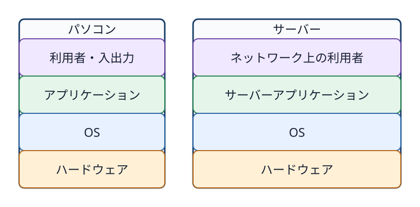
図1-1 パソコンとサーバーは、用途や操作方法が異なっても、アプリケーション、OS、ハードウェアという基本構成を共有する。
複数のアプリケーションが同時に動くとき、それぞれがCPUやメモリを自由に独占したり、ほかの利用者のファイルを勝手に読んだりしては困る。OSは、ハードウェアとアプリケーションの間に入り、資源の利用を調整し、共通の利用方法と保護機能を提供する。
本書では、OSの主な働きを次の四つに整理する。
OSが共通機能を提供するため、アプリケーションの開発者は、機種ごとにCPUやディスクを直接制御する処理をすべて書き直す必要がない。
人がコンピューターへ操作を伝える方法をユーザーインターフェースという。代表的なものがGUIとCLIである。
CLIで入力する個々の命令をコマンドという。コマンド名に、必要に応じてオプションや処理対象を続ける。たとえば、catはファイルの内容を順に読み取り、標準出力へ表示するコマンドである。
cat /etc/os-releaseこの例では、catがコマンド名、/etc/os-releaseが読み取るファイルのパスである。入力された文字列はシェルによって解釈され、catプログラムが起動される。catはOSへファイルの読み取りを依頼し、OSはアクセス権を確認してから内容を渡す。コマンド、ターミナル、シェルの違いと基本操作は第3章で詳しく扱う。
Linuxを使用しているシステムは、概念上、ユーザー空間（user space）とカーネル空間（kernel space）に分けて考えられる。
カーネルはOSの中核であり、CPU、メモリ、デバイス、ファイルシステム、プロセス、アクセス権、ネットワークを管理する。カーネルは強い権限を持つため、通常のアプリケーションから分離されたカーネル空間で動く。
GUIを構成するプログラム、ターミナル、シェル、コマンド、Webサーバー、データベースなどは、通常はユーザー空間で動く。GUIとCLIは「別の空間」ではなく、どちらもユーザー空間に存在する操作方法と関連プログラムである。アプリケーションもユーザー空間で動き、必要な処理をカーネルへ依頼する。
この境界を通ってカーネルの機能を呼び出す仕組みをシステムコール（system call）という。本書ではシステムコールの番号やプログラミング方法までは扱わない。「ユーザー空間のプログラムが、保護されたカーネル機能を利用するための窓口」と理解すればよい。
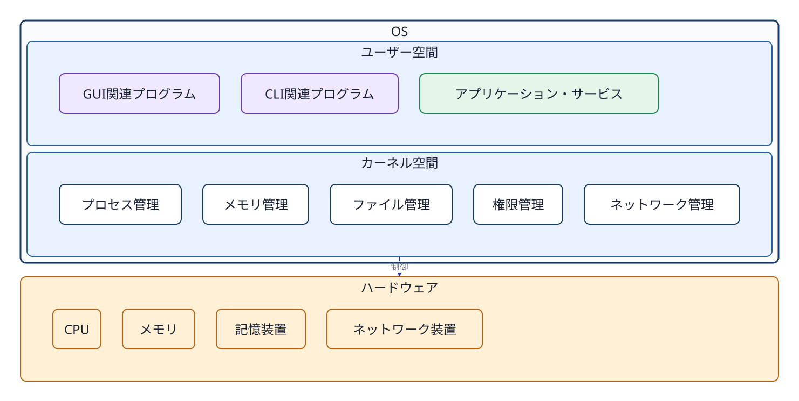
図1-2 広い意味でのOS環境は、ユーザー空間で動く各種プログラムと、ハードウェアを管理するカーネル空間から構成される。
厳密には、「OS」という語をカーネルだけに近い意味で使う場合と、基本コマンドや管理プログラムを含むシステム全体の意味で使う場合がある。本書では、両者を区別する必要がある箇所では「カーネル」と「ユーザー空間のプログラム」という名称を使う。
Linuxは本来カーネルの名称である。一方、実際に利用できるシステムを作るには、カーネルに加えて、基本コマンド、シェル、ライブラリ、パッケージ管理、サービス管理などが必要になる。これらを組み合わせて導入・更新できる形にまとめたものをLinuxディストリビューションという。
Ubuntu、Debian、FedoraなどはLinuxディストリビューションの例である。本授業では実習環境を統一するためにUbuntu Server 24.04 LTSを使用するが、学習の中心はUbuntuという製品名ではなく、Linuxシステムに共通する基本概念と操作である。ディストリビューションの歴史と違いは第2章で扱う。
ストレージに保存されているプログラムは、置かれているだけでは処理を行わない。プログラムがメモリへ読み込まれ、CPUによって実行されている状態の存在をプロセスという。OSは各プロセスを区別するために、PID（プロセスID）という番号を割り当てる。
Linuxシステムの起動は、概略として次の順序で進む。
systemdが動き、PID 1を持つ。systemdが設定と依存関係を読み、ネットワーク、SSH、ログ管理、Webサーバー、データベースなどに必要なサービスを起動・監視する。サービスとは、利用者が画面から毎回起動しなくても、バックグラウンドで継続的な機能を提供するよう管理されるプログラムである。サービスを起動すると、実際の処理を行う一つ以上のプロセスが動く。たとえばデータベースサーバーでは、データベースのサービスが管理対象となり、その実体であるプロセスがメモリ上で動き、必要に応じてファイルを読み書きし、ネットワークからの要求を待ち受ける。
systemdはデータベースやWeb処理そのものを実行するプログラムではない。どのサービスを、いつ、どの順番で、どのユーザーとして起動するかを管理する。PID、プロセスの親子関係、シグナルは第8章、systemd、サービス、ユニットは第10章で詳しく扱う。
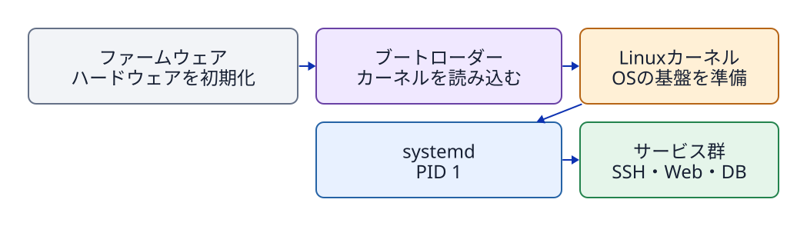
図1-3 カーネルが最初のユーザー空間プロセスを起動し、systemdが必要なサービスプロセスを順序付けて起動する。
ネットワークへ接続され、独立したOS環境として動作するコンピューターまたは仮想マシンを、ホスト（host）と呼ぶ。ホストには、それを識別するためのホスト名（hostname）が設定される。ホスト名はコンピューター側の名前であり、利用者の名前ではない。
一つのホストには複数のユーザーアカウントを登録できる。OSは、操作を行っているユーザーと所属グループを数値のIDで管理する。ユーザーを識別する番号をUID（user ID）、グループを識別する番号をGID（group ID）という。idコマンドは、現在のユーザー名、UID、主グループ、補助グループを確認するために使う。
本演習では、学生PC、AWS CloudShell、Ubuntu EC2という複数のホストを使用する。画面上では同じような文字入力欄に見えても、それぞれが別のOS、ユーザー、プロセス、ファイルを持つ。現在のユーザー名、ホスト名、作業ディレクトリを確認することで、どのホストのどの場所を操作しているかを判断できる。
id
hostname
pwdidはユーザーとグループの識別情報、hostnameはホスト名、pwdは現在の作業ディレクトリを表示する。ユーザー管理は第6章、ファイルとパスは第4章、CloudShellとUbuntuの接続関係は第12章で詳しく扱う。
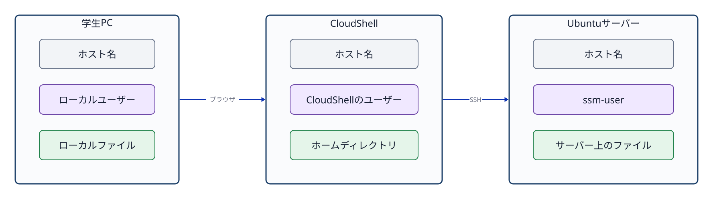
図1-4 各ホストは独立したOS環境を持ち、その中でユーザー、プロセス、ファイルが個別に管理される。
答え: どちらもCPU、メモリ、ストレージ、ネットワーク、OS、アプリケーションを持つコンピューターである。パソコンは目の前の利用者による対話操作を主な用途とし、サーバーはネットワークを通じてほかのコンピューターへ機能やデータを提供することを主な役割とする。
答え: GUIとCLIは利用者が操作を伝える方法であり、それを実現するプログラムは通常ユーザー空間で動く。ユーザー空間のプログラムは、システムコールを通じてカーネル空間の機能を利用する。カーネルはハードウェアとOS資源を管理する。
答え: プログラムはストレージに保存された命令群である。プロセスは、そのプログラムがメモリへ読み込まれて実行されている存在である。サービスは、継続的な機能を提供するようsystemdなどによって管理される単位であり、その実体として一つ以上のプロセスが動く。
答え: Ubuntu Server 24.04では、カーネルが最初に起動するユーザー空間の管理プロセスがsystemdであり、PID 1を持つ。systemdは設定と依存関係に従って各種サービスを起動、停止、監視する。
答え: ホスト名はOSが動いているコンピューターまたは仮想マシンを識別する名前である。ユーザー名は、そのホスト上で操作権限を持つアカウントを識別する名前である。一つのホストに複数のユーザーを登録できる。
歴史を学ぶ目的は年号の暗記ではない。Linux、macOS、Windowsの間で似た用語や異なるコマンドが使われる理由を理解し、「LinuxはUnixのソースコードをそのまま受け継いだ」「macOSはLinuxの一種である」「WindowsもUnixから派生した」といった誤解を避けるために学ぶ。
Unixは1969年にベル研究所（Bell Labs）で開発が始まった。その後の発展を通じて、階層型ファイルシステム、プロセス、マルチユーザー（複数ユーザー）、小さなツール（small tools）の組み合わせなど、現在のOSにもつながる基本設計思想を広めた。
写真2-1 初期Unixの開発に使われた機種DEC PDP-7の保存機。2018年、米国の博物館で撮影。撮影: ComputerGeek7066、Wikimedia Commons、CC BY-SA 4.0（無加工）。
写真は当時のベル研究所の実機を撮影したものではない。PDP-7は1960年代に製造されたコンピューターで、初期Unixが動いた機種である。
本書の演習との接点は明確である。ファイルをディレクトリの階層構造で扱う。プログラムをプロセスとして観測する。ユーザーとグループで利用権限を分ける。grepの出力を別のコマンドやファイルへつなぐ。これらはUnix系システムで長く培われてきた操作モデルである。
「Unix」は単一のコマンド集の名称ではない。また、歴史上のUnixから影響を受けたシステムが、すべて同一のソースコードや正式なUNIX商標認証を持つわけでもない。一般にUnixに似た設計やインターフェースを持つシステムをUnix系（Unix-like）と呼ぶ。正式な商標・製品認証の話題と、設計思想上の分類は明確に分けて考える必要がある。
GNUプロジェクト（GNU Project）は1983年に発表され、Unixと互換性のある自由なソフトウェアシステムの構築を目指した。シェル、コンパイラ、基本ユーティリティなど多くのプログラムが開発された。現在の多くのLinuxディストリビューションでは、Linuxカーネルの周囲でGNUのツール群を含む多様なソフトウェアが動作している。
シェル（shell）とは、利用者が入力した文字列を読み取り、コマンドとして解釈し、必要なプログラムを起動するユーザー空間のプログラムである。シェルは、単に一つのコマンドを起動するだけではない。引数の区切りを解釈する。入出力のリダイレクトやパイプを組み立てる。環境変数を展開する。複数のコマンドを書いたシェルスクリプトを順番に実行する。このように、利用者と多数のコマンドの間で操作を取りまとめる役割を持つ。
BashはGNUプロジェクトが開発するシェルの一つであり、名称は「Bourne-Again Shell」に由来する。Bash自体はLinuxカーネルでも、ターミナル画面でもない。Ubuntuのターミナルで入力した文字列をBashが解釈し、lsやcpなどのプログラムを起動する。cdのようにシェル自身の状態を変える処理は、Bashに組み込まれたコマンドとして実行される。ターミナル、シェル、コマンドの違いは第3章で詳しく扱う。
ここで大切なのは、カーネル単体では学生が操作するシステム全体にはならないという点である。たとえばBashはシェルであり、GNU coreutilsはlsやcpなどの基本コマンド群を提供する。さらにパッケージマネージャー、systemd、ライブラリ、設定ファイル、各種アプリケーションが組み合わさることで初めて実用的なシステムになる。
Linuxカーネルは1991年に開発が始まった。Unixに似た機能とインターフェースを持つことを目指して開発されたが、歴史上のUnixのソースコードから直接枝分かれしたものではない。したがって、OSの系譜図ではUnixからLinuxへ「ソースコードを継承した実線」を引くのではなく、設計上の影響や互換性の目標を示す破線などで表現する。
Linuxカーネルは、プロセス、メモリ、ファイルシステム、デバイス、ネットワークなどの低レイヤーを担当する。UbuntuはLinuxカーネルに、多数のユーザー空間のツール群、パッケージ、初期設定、リリース管理方針を組み合わせたディストリビューションである。
一方、Windows NT系はUnixから枝分かれしたOSではなく、Unix系とは別の系統として設計された。Windowsのcmd.exeやPowerShellもシェルであるが、Bashとは構文、組み込みコマンド、パス表記、管理方法が異なる。名前が似たコマンドや、複数のOSで動く外部プログラムも存在するが、Unix系とWindowsで同じコマンドがそのまま利用できるとは考えない方がよい。BashはLinuxそのものではなく、LinuxやmacOSなどでも利用できるシェルの一つである。
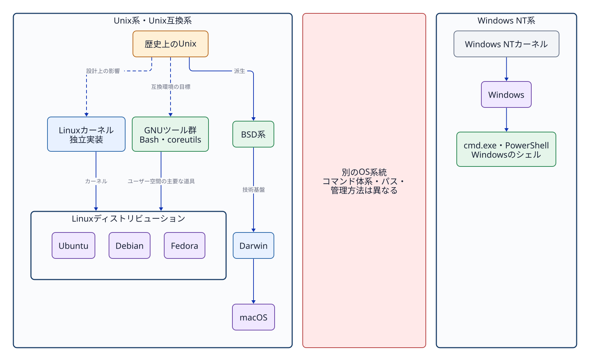
図2-1 Unix系・Unix互換系とWindows NT系は別の系統であり、コマンド体系の互換性を前提にできない。 LinuxはUnixに似たインターフェースを持つ独立実装であり、macOSはLinuxの派生ではない。
Linuxカーネルを利用するシステムにはUbuntu、Debian、Fedoraなど複数のディストリビューションが存在する。各ディストリビューションは、採用するソフトウェア、パッケージ形式、更新方針、初期設定、サポート期間などを独自に決定する。
本授業では環境をUbuntu Server 24.04 LTSに統一する。ほかのディストリビューションでも同じlsやgrepを利用できる場合が多いが、パッケージ管理コマンド、設定ファイルの配置場所、セキュリティ機能、サービスの初期設定などが異なる場合がある。Red Hat/RHEL向けの手順をUbuntuへ無条件に当てはめてはならない。
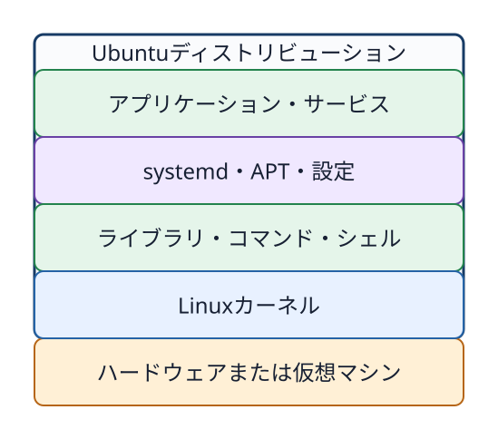
図2-2 Linuxカーネル、ライブラリ・基本コマンド、システム管理、パッケージ、アプリケーションをディストリビューションが統合する構造。 UbuntuとLinuxを完全な同義語として混同しないための構成図である。
現在のmacOSはDarwinを中核（カーネル基盤）に持つ。Appleの公式資料では、DarwinはMach、BSD、Apple独自の技術などから構成されていると説明されている。BSD由来のプロセスモデル、アクセス権体系、ネットワーク機能などを備えているため、ターミナル上でUnix系に類似したコマンドやパスを利用できる。
ただし、macOSはLinuxディストリビューションではない。Linuxカーネルを中核にしておらず、独自のGUIシステムやApple固有のフレームワークなど、Darwin単体では構成されない領域も併せ持つ。また、古いClassic Mac OSと、Mac OS X以降のDarwin基盤の系譜も区別して理解する必要がある。
初期の一般消費者向けWindowsにはMS-DOSを土台にした系列（Windows 95/98など）が存在した。一方、現在のWindowsへ直接つながるWindows NT系列は、それらとは別にゼロから設計されたシステムである。Windows 2000、XP、そして現代のWindowsに至る流れを、Unixから単純に派生した系譜として描いてはならない。
Windowsにもカーネルモードとユーザーモード、プロセス、ファイルアクセス権、サービス、ネットワークソケット、CLIが存在する。これは現代のOSが解決すべき技術的課題に共通性があるためであり、Unixの子孫であることの証明ではない。PowerShellを利用できることや、Windows Subsystem for Linux（WSL）が動作することも、Windowsカーネル自体がLinuxになったことを意味するわけではない。
| 観点 | Ubuntu/Linux系 | macOS | Windows |
|---|---|---|---|
| 中核 | Linuxカーネル | Darwin（Mach・BSD等） | Windows NT系カーネル |
| 主な標準CLI | シェルとUnix系ツール群 | シェルとBSD/Unix系ツール群 | PowerShell、cmd等 |
| パスの例 | /home/user | /Users/user | C:\Users\user |
| ソフトウェア導入 | ディストリビューションのパッケージ管理 | App Store、インストーラー、パッケージ管理ツール等 | Microsoft Store、インストーラー、パッケージ管理ツール等 |
| 本授業での扱い | 実習対象 | 比較対象 | 比較対象 |
同じ目的を持つ機能であっても、具体的なコマンド名、初期設定、アクセス権モデルの詳細な挙動はOSごとに異なる。本授業ではUbuntuを用いてOSの基本原理を学び、将来ほかのOSへ移行する際にも、「同じコマンドを探す」のではなく、「同じ目的を担う機能や仕組みを探す」姿勢を身に付けることが重要である。
答え: Linuxはプロセス、メモリ、デバイスなどを管理するカーネルである。UbuntuはLinuxカーネルに、GNUツール群、シェル、ライブラリ、パッケージ管理、設定などを組み合わせたLinuxディストリビューションである。
答え: シェルは、利用者が入力した文字列をコマンドとして解釈し、プログラムの起動、引数の受け渡し、リダイレクト、パイプ、変数展開、スクリプト実行などを行うユーザー空間のプログラムである。BashはGNUプロジェクトが開発するシェルの一つであり、Linuxカーネルそのものではない。
答え: macOSはDarwinを基盤とし、その中核にはMachやBSD由来の技術が使われている。Linuxカーネルを中核としていないため、Linuxディストリビューションではない。
答え: 証拠にはならない。プロセスやアクセス権は、現代のOSが共通して必要とする機能である。Windows NT系はUnix系とは別の系統であり、cmd.exeやPowerShellの構文、コマンド、パス、管理方法もBashを中心とするUnix系環境とは異なる。
GUI（グラフィカルユーザーインターフェース）は、ウィンドウ、アイコン、メニュー、ポインタなどを使って視覚的に操作する方法である。CLI（コマンドラインインターフェース）は、文字列（テキスト）でコマンドを入力し、文字列の結果を受け取る操作方法である。どちらも人間がコンピューターへ指示を出すための入口であり、GUIが内部で必ずCLIへ変換されなければ動かない、という従属関係ではない。
ターミナル（terminal）は、文字を入力し結果を表示する画面・接続環境である。シェル（shell）は、その入力された文字列を読み取り、コマンドを解釈して実行するプログラムである。本演習環境で主に使用するシェルは Bash である。
人間（操作者） → ターミナル → Bash（シェル） → コマンドのプロセス → カーネルの機能ターミナルとシェルは同じものではない。ターミナルは文字をやり取りする場所であり、シェルは入力された文字列の意味を判断して処理するプログラムである。
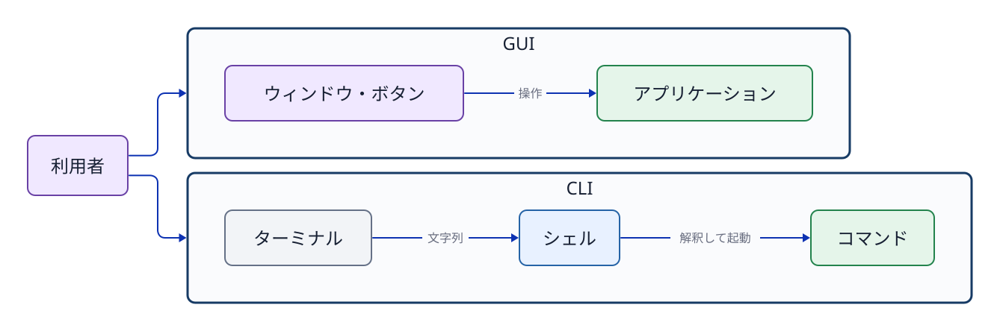
図3-1 GUIとCLIは並列の操作入口。CLIではターミナルとシェルを明確に区別する。
シェルがユーザーからの入力を待っているときに表示する文字列をプロンプト（prompt）という。プロンプトにはユーザー名、ホスト名、現在位置（カレントディレクトリ）などが表示されることが多いが、設定によって表示内容は異なる。
教材中の次のような$はプロンプトの表示例であり、ユーザー自身が入力する文字ではない。
$ pwd
/home/ssm-user入力するコマンドはpwdであり、その次の行は出力例である。本書のコマンド例では、入力する部分と出力を区別するために$を表示する場合がある。
基本形は次のように読む。
コマンド オプション 引数
ls -l /srvlsは実行するコマンド、-lは詳細表示を指定するオプション、/srvは対象を指定する引数（argument）である。短いオプションを組み合わせてls -laのように指定できるコマンドも多いが、すべてのコマンドで同じアルファベットが同じ意味を持つとは限らない。たとえばgrep -nは行番号の表示を意味するが、tail -n 5は表示する行数を指定する。
コマンドラインでは空白が要素の区切りとして扱われる。そのため、空白を含む一つの文字列をひとまとまりの引数として渡すには、クォート（引用符）で囲む必要がある。
printf '%s\n' 'JDU SSH transfer test'クォート、変数展開、リダイレクトについては第5章で詳しく解説する。
シェルへ入力できるコマンドには、大きく分けてシェル組み込みコマンドと外部コマンドがある。
シェル組み込みコマンド（shell builtin）は、Bash自身に用意されている機能である。別の実行ファイルを探して起動する必要がない。たとえばcdは、現在動作しているBash自身の作業ディレクトリを変更するための組み込みコマンドである。
外部コマンドは、ストレージ上に保存されたプログラムをシェルが探して起動するものである。ls、mkdir、grepなどは、Ubuntuで最初から利用できることが多いが、Bashの組み込み機能ではなく外部プログラムである。つまり、最初から使えることとシェルに組み込まれていることは別の分類である。
外部コマンドの中には、OSの導入時から用意されているものと、必要になったときに追加導入するものがある。たとえばpython3はPythonプログラムを実行する外部コマンドであり、環境にPythonが導入されている場合だけ利用できる。Ubuntuの構成によっては最初から存在するが、存在しない場合はパッケージとして導入する。パッケージの導入方法は第9章で扱う。
type cd
type mkdir
type python3typeは、入力した名前をBashがどのように解釈するかを表示する。組み込みコマンドならその事実が表示され、外部コマンドなら実行ファイルの場所が表示される。見つからない場合は、その名前のコマンドを現在の環境では利用できない。
typeの結果にエイリアス（alias）と表示されることもある。エイリアスとは、長いコマンドやよく使う指定に、短い別名を付けるシェルの機能である。たとえば環境によってはllという名前にls -alFなどが登録されている。エイリアスの有無や内容は環境ごとに異なる。
外部コマンドが入力されると、シェルはPATHという設定に登録されたディレクトリを順に調べ、同じ名前の実行ファイルを探す。実際の保存場所を最初から暗記する必要はない。まずtypeで、組み込みコマンド、外部コマンド、エイリアスのどれとして認識されているかを確認する。
シェルは入力された文字列をそのままカーネルへ渡しているわけではない。内部では大まかに次の処理を順番に行っている。
$(...)、ワイルドカードなどを規則に従って展開する。この流れを知っていると、問題が起きた場所を切り分けやすくなる。コマンドが見つからない場合は、名前の解釈や外部プログラムの探索を確認する。期待した対象が処理されない場合は、オプションや引数の解釈を確認する。入出力やプロセスについては、第5章と第8章で詳しく扱う。
CLIで現在位置やコマンドの意味が分からなくなった場合は、推測で操作を続けず、次の操作で状況を確認する。
| 操作・コマンド | 確認できること |
|---|---|
Ctrl+C | 現在実行中の処理へ停止を求め、プロンプトへ戻る。 |
pwd | 現在作業しているディレクトリを表示する。 |
cd ディレクトリ | 作業するディレクトリを移動する。 |
ls | 現在のディレクトリにあるファイルやディレクトリを表示する。 |
grep '文字列' ファイル | ファイルから指定した文字列を含む行を探す。 |
type コマンド名 | その名前が組み込み、外部コマンド、エイリアスのどれとして認識されるか調べる。 |
help コマンド名 | Bashの組み込みコマンドの説明を表示する。 |
exit | 現在のシェルを終了し、そのシェルを開始する前の状態へ戻る。 |
pwd、cd、lsは「どこで何を操作しているか」を確認する基本である。grepは長い文章やログから必要な行を探すときに使う。typeとhelpは、コマンド自体の種類や使い方を調べるために使う。なお、grepやlsは調査に便利な外部コマンドであり、すべてがシェル組み込みコマンドという意味ではない。
外部コマンドのマニュアルはmanコマンド、Bashの組み込みコマンドはhelpコマンドが確認の入口となる。
man ls
help cd
grep --helpマニュアルではNAMEでコマンドの概要・目的、SYNOPSISで構文形式、DESCRIPTIONで詳細な動作仕様、OPTIONSで各オプションの意味を確認する。書式内の角括弧[ ]は、多くの場合「省略可能」であることを示す表記規則であり、その括弧記号自体を入力するわけではない。なお、manの閲覧画面はqキーで終了できる。
コマンドは画面へのテキスト出力とは別に、処理結果を表す小さな整数値を終了ステータス（終了コード、exit status）としてシェルへ返す。Unix系システムの共通規約として、0は「成功・正常終了」、0以外は何らかの「失敗・不成功・エラー」を意味する。
test -e /etc/os-release
echo $?$?は直前に実行されたコマンドの終了ステータスを保持する特殊な変数である。別のコマンドを実行すると即座に上書きされてしまうため、確認したいコマンドの直後に参照する必要がある。また、0以外の値がすべて同じ原因を指すとは限らない。たとえばgrepは「パターンに一致する行がなかった場合（1）」と「ファイルが存在しないなどの実行エラー（2）」で異なる値を返す。画面に表示されたメッセージだけでなく、システムが何を成功・失敗の判定基準としているかを確認することが重要である。
答え: ターミナルは文字を入力し結果を表示する場所・接続環境である。シェルは入力された文字列を解釈し、組み込み機能を処理したり外部プログラムを起動したりするプログラムである。
cdがシェルの組み込みコマンドでなければならない理由を説明せよ。答え: cdは、現在動作しているシェル自身の作業ディレクトリを変更する必要があるためである。別の外部プロセスだけが移動しても、元のシェルの現在位置は変わらない。
答え: 最初から使える外部プログラムも存在するためである。たとえばmkdirはUbuntuで最初から使えることが多いが、Bashの組み込みではなく外部コマンドである。一方、cdはBashの組み込みコマンドである。
答え: type コマンド名を使用する。組み込みコマンド、外部コマンド、エイリアスのどれとして認識されているかを確認できる。
helpとman bashでも確認する）ファイルにはデータ本文だけでなく、名前、種別、所有者（owner）、グループ（group）、アクセス権（パーミッション）、サイズ、最終更新時刻などのメタデータ（metadata）が存在する。cat で表示される内容が完全に同一の2つのファイルであっても、所有者やアクセス権が異なればOS上では別の状態として扱われる。
ls -l /srv/jdu-share/README.txt
stat /srv/jdu-share/README.txtls -l はディレクトリ内の主要情報を一覧形式で表示する。stat は指定した単一対象のメタデータを詳細に表示する。
ディレクトリを「ファイルを箱の中に物理的に詰め込む入れ物」という比喩だけで理解すると、実態とずれて不正確になる。ディレクトリの本質は、ファイル名や別のディレクトリ名を実体と対応付け、階層構造を構築する特殊なファイルである。/srv/jdu-share/README.txt というパスは、最上位のルートディレクトリ / から出発し、srv、jdu-share、README.txt という名前を順番にたどる位置指定である。
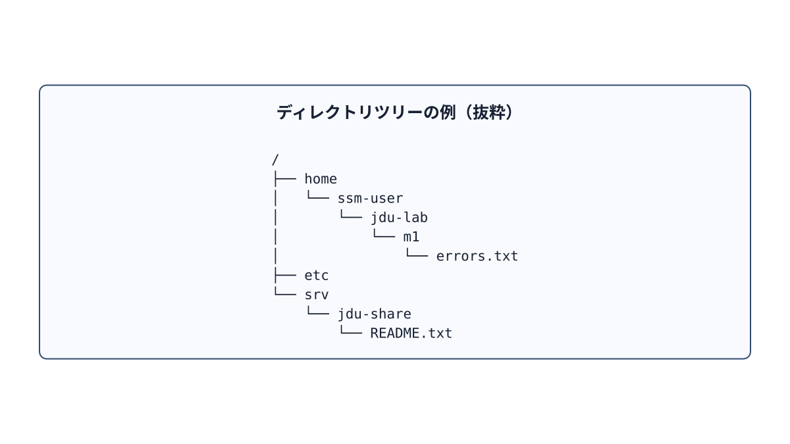
図4-1 treeコマンドの表示に近い階層図。枝を順にたどるとファイルの位置が分かる。
Linuxでは、システム全体がルート / を頂点とする単一のディレクトリツリー（階層構造）として構成される。物理的に異なるディスクや仮想ファイルシステムも、特定のディレクトリへ結合してシステム全体の一部として見せることができる。この接続操作をマウント（mount）という。本章では概念の理解にとどめ、ディスクのフォーマットやマウントの具体的な操作は後続のストレージ単元で扱う。
ルートディレクトリは、ディレクトリツリー全体の出発点 / である。ホームディレクトリは、各ユーザーが自分のファイルを置く場所である。たとえば ssm-user のホームディレクトリは /home/ssm-user であり、/ の下にある home、その下にある ssm-user と順にたどって到達する。/home は複数ユーザーのホームディレクトリを置く親ディレクトリで、ssm-user 本人のホームディレクトリではない。/ と /home/ssm-user は役割も位置も異なる。名前が似ている /root も、ルートディレクトリ / とは別の場所である。
先頭がスラッシュ / で始まるパスは絶対パス（absolute path）である。現在どのディレクトリにいても、常に同じ場所を一意に指し示す。
/srv/jdu-share/README.txt先頭がスラッシュ / で始まらないパスは相対パス（relative path）であり、現在のカレントディレクトリ（作業ディレクトリ）を基準として位置を指定する。
cd /srv/jdu-share
cat README.txtpwd は現在のカレントディレクトリを表示する。. は「現在のディレクトリ」、.. は「1つ上の親ディレクトリ」、~（チルダ）は「現在のユーザーのホームディレクトリ」へシェルによって自動展開される。
cd ~/jdu-lab/m1
pwd
cd ..
pwd~ は現在のユーザーのホームディレクトリを表し、ルートディレクトリ / を表す記号ではない。~ を含むパスが指す場所は、操作中のユーザーやホストによって変わる。たとえば ssm-user の ~ が /home/ssm-user であっても、su - jduops でユーザーを切り替えると、~ は jduops のホームディレクトリ（/home/jduops など）を指す。別のホストに接続した場合も、そのホスト上で操作しているユーザーのホームディレクトリを指す。現在の場所は pwd、現在のホームディレクトリは printf '%s\n' "$HOME" で確認できる。HOME はホームディレクトリの場所を保持する環境変数であり、変数の仕組みは第5章で説明する。
| パス | 本教材での役割 |
|---|---|
/home | 通常ユーザーのホームディレクトリが配置される |
/etc | システム全体や各種サービスの設定・識別情報ファイル群。/etc/os-release もここに配置される |
/usr/bin | 多くの一般的なコマンドの実行ファイルが格納される |
/var/log | システムやサービスのログファイルが配置される。すべてのログがここにあるとは限らない |
/srv | システムやサービスが提供するデータを配置する領域。本演習では共有フォルダやWebコンテンツに使用する |
/tmp | 一時ファイル用のディレクトリ。誰でも読み書きできるが、恒久的な保存先ではない |
/proc | カーネルがプロセスやシステムの状態をファイルの形式で見せる仮想ファイルシステム |
この配置表は「絶対にこのディレクトリにしか置いてはならない」という固定規則ではない。ディストリビューションの方針やアプリケーションの設計によって細部は異なる場合がある。
mkdir -p ~/jdu-lab/p1/practice01/config
cp inbox/config/training.conf practice01/config/training.conf
mv old-name.txt new-name.txt
rm unwanted.tmpmkdir -p は、指定したパスの途中に存在する親ディレクトリも含めて一括作成し、対象ディレクトリがすでに存在していてもエラーにしない。cp SOURCE DESTINATION はファイルやディレクトリを複製する。コピー元（SOURCE）とコピー先（DESTINATION）の指定順序を取り違えないよう注意する。mv はファイルの移動や名前の変更（リネーム）に使用する。rm はファイルを削除する。通常のGUIのような「ごみ箱」を経由せず即座に削除されるため、実行前に対象パスを pwd や ls で確認する習慣をつける。初学者の演習では、指定ディレクトリ以下を警告なしで一括削除できる危険な rm -rf は使用しない。たとえば不要な .tmp ファイルを削除する場合も、まずは find コマンドで一覧を確認する。
find ~/jdu-lab/p1/practice01 -type f -name '*.tmp' -printシングルクォートで囲まれた '*.tmp' は、シェルによるワイルドカードの事前展開を防ぎ、検索パターン文字列をそのまま find コマンドへ渡すための指定である。対象ファイルを目視で確認した上で、1件ずつ削除するか、演習で指示された安全な範囲だけを慎重に処理する。
ls -la
ls -ld /srv/jdu-share
tree ~/jdu-lab/m1/case01
stat -c '%U:%G %a %n' /srv/jdu-share/README.txtls -la は、ドット . で始まる隠しファイルを含め、カレントディレクトリ内の全項目を詳細一覧で表示する。ls -ld DIR は、ディレクトリ内のファイル一覧ではなく、指定したディレクトリ自身のメタデータ（属性）を表示する。tree はディレクトリの階層構造を視覚的なツリー形式で表示する。本演習環境では初期セットアップ時にあらかじめ導入されている。stat -c は必要な項目だけを指定したフォーマットで抽出表示できる。%U は所有者ユーザー名、%G は所有グループ名、%a は8進数表現のアクセス権モード、%n はファイル名・パスである。単一のコマンドですべてを把握しようとするのではなく、「階層構造を見たいのか（tree）」「中身の一覧を見たいのか（ls）」「属性・メタデータを詳しく見たいのか（stat）」という自身の目的に合わせて適切なコマンドを選択する。
nano FILE は、ターミナル画面内でテキストファイルを編集するための簡易エディタである。本書の演習では、編集作業を行う前に対象ディレクトリへ移動し、pwd と ls で現在地と対象ファイルを確実に確認してから起動する。
cd ~/jdu-lab/m0
pwd
nano observation.env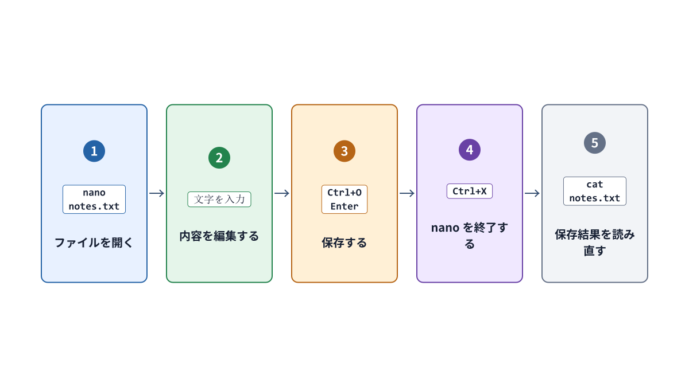
図4-2 nanoの基本操作の流れ。画面下に表示される ^ 記号は Ctrlキー を表す。
Ctrl+O を押してファイルの書き込み（保存準備）を開始する。Enter キーを押して保存を確定する。Ctrl+X を押して nano エディタを終了する。cat observation.env などで編集結果を再度読み出し、正しく保存されたことを確認する。未保存の変更が残っている状態で終了しようとすると、変更を保存するかどうかの確認メッセージが表示される。英語表記の画面では、Y（Yes）が保存、N（No）が破棄、Ctrl+C が取り消し（キャンセル）を意味する。画面に表示された英語のメッセージを読まずにキーを乱打してはならない。
ファイルを読むとき、OSはパスを先頭から順にたどる。その途中にある各ディレクトリで、操作中のユーザーに通り抜ける権限があるかを確かめる。どこか一つでも通過できないディレクトリがあれば、対象ファイル自身に読み取り権限 r があっても、そのファイルを読むことはできない。namei -l コマンドは、指定したパスを構成する親ディレクトリと対象ファイルを一段ずつ表示し、それぞれの所有者とアクセス権を確認できる。
namei -l /srv/jdu-web/index.txtディレクトリに対する実行権限 x は、プログラムファイルの「実行」とは異なり、「そのディレクトリを経由して配下の名前にアクセスする（通り抜ける）」権限を意味する。この仕組みの詳細は第7章で詳しく解説する。
答え: ルートディレクトリ / はシステム全体のディレクトリツリーの出発点である。ホームディレクトリはユーザーごとの作業場所であり、たとえば ssm-user なら /home/ssm-user である。~ は現在のユーザーのホームディレクトリを表す。
ls -l DIR と ls -ld DIR では、何を表示するか。答え: ls -l DIR は DIR の中にある項目を詳細に表示する。ls -ld DIR は DIR というディレクトリ自身の情報を表示する。
~/jdu-lab/m6 が、ユーザーやホストによって別の場所を指すのはなぜか。答え: ~ は現在操作しているユーザーのホームディレクトリへ展開されるためである。ユーザーやホストが変わるとホームディレクトリも変わり得る。
r があるのに読めない場合、namei -l の何を確認するか。答え: パスの先頭から対象ファイルまでの各親ディレクトリについて、操作中のユーザーが通り抜ける権限 x を持つかを確認する。途中の一つでも通過できなければ、ファイルに r があっても読めない。
man hier、man find、man stat、nanoの画面（制作時に実機確認する）UbuntuをはじめとするLinuxでは、設定やログの多くがプレーンテキスト（文字列データ）として保存される。専用のGUIツールがなくても内容の確認・比較・検索が容易であり、別のコマンドへ柔軟に処理を引き渡せるためである。ただし、すべての設定やログが単純なテキストファイルであるとは限らない。systemd journalのように、バイナリ形式で記録され専用のコマンドを通じて閲覧する仕組みもある。
各プロセスには、標準入力（stdin: standard input）、標準出力（stdout: standard output）、標準エラー出力（stderr: standard error）という3つの基本的なデータ入出力の窓口（ストリーム）が用意されている。
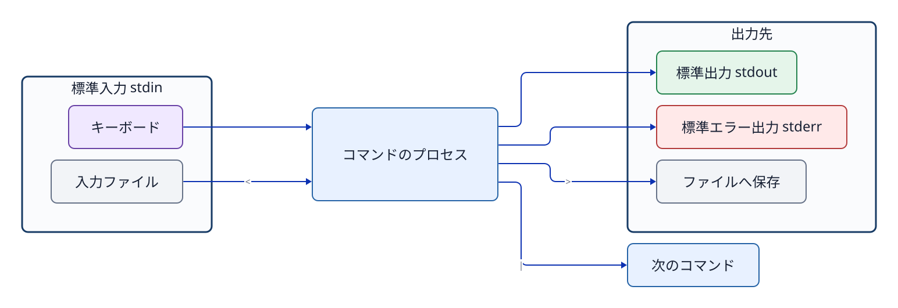
図5-1 プログラムの三つの標準ストリーム。 > は通常stdoutをファイルへ接続し、| は左側のコマンドのstdoutを右側のコマンドのstdinへ接続する。
cat incident.logをそのまま実行すると、ファイルが入力元となり、ターミナル画面がstdoutの表示先となる。ファイルそのものがターミナルへ飛んでいくのではなく、catプロセスがファイルの内容を読み出し、その文字列データをstdoutへ書き出しているのである。
grepで必要な行を選ぶgrep 'ERROR' incident.loggrepは入力を1行ずつ走査し、指定したパターンに一致する行全体をstdoutへ出力する。
grep -F 'ERROR' incident.log-Fは検索パターンを正規表現ではなく固定文字列（プレーンテキスト）として扱うオプションである。ERRORのような単純な英単語であれば結果は同じになることが多いが、記号文字をエスケープなしでそのまま検索したい場合に有効である。
grep -nは一致した行番号も先頭に付加して表示する。元の行だけを別のファイルへ保存したい場合は、行番号を加える-nを付けない。
終了ステータスにも重要な意味がある。grepでは一般に「パターンに一致する行があった場合」は0、「一致する行が1行もなかった場合」は1、「ファイルが存在しないなどの実行時エラー」は2となる。画面に何も出力されなかった際、単に対象文字列が存在しなかったのか、それともファイル名を間違えてエラーになっていたのかを区別するために終了ステータスを確認する。
tailで末尾を読むtail -n 5 incident.logtail -n 5は、ファイルの末尾5行を元の順序のままstdoutへ出力する。ここでの-nは出力行数を指定するオプションであり、grep -nの行番号付加とは全く意味が異なる。オプションのアルファベット1文字だけを丸暗記するのではなく、コマンドごとのマニュアルで仕様を確認することが重要である。
tail -fは、ファイルへ新たに追加された行を継続して表示する。表示を止めるにはCtrl+Cを押す。
grep 'ERROR' incident.log > errors.txt
tail -n 5 incident.log > recent.txt>（リダイレクト）は、シェルがstdoutの出力先をファイルへと切り替える機能である。右辺に指定したファイルがすでに存在する場合、コマンドが実行される前にファイルサイズをゼロに切り詰めて（空にして）上書きする。そのため、入力ファイルと出力ファイルに同じファイルを指定すると、コマンドがデータを読み込む前にファイルの内容が消失してしまう危険がある。
# 危険な例。実行しない
grep 'ERROR' incident.log > incident.log>>はファイルの末尾にデータを追記する。複数回実行すると同じ行が重複して増える。毎回同じ内容のファイルを作り直すなら、>で上書きする。
標準エラー出力（stderr）は、通常>だけでは同じファイルには書き込まれない。2>を使うと、stderrの出力先を別のファイルへ指定できる。
grep 'ERROR' incident.log | tail -n 5|（パイプ）は、左側のコマンドのstdoutを右側のコマンドのstdinへ直接接続する。ディスク上へ中間ファイルを作成することなく、処理結果をパイプラインとして絞り込むことができる。ただし、左側のコマンドが出力したstderrは通常パイプラインには渡されない。
パイプライン全体の終了ステータスは、Bashの標準設定では「最後に実行されたコマンド」の終了ステータスとなる。そのため、左側のコマンドが失敗していても右側のコマンドが成功すればパイプ全体として成功と判定されてしまう場合がある。厳密な自動処理スクリプトではset -o pipefailなどの利用を検討する。
シェルはコマンドを実行する前に、入力された文字列の展開処理を行う。
name='incident.log'
printf '%s\n' "$name"'...': 囲まれた内部の文字列をほぼ文字どおり（リテラル）に扱う。$HOMEなどの変数も展開されない。"...": 空白を含む文字列を単一の引数としてまとめつつ、$HOMEなどの変数や$(...)などのコマンド置換は展開する。"$name"のようにダブルクォートで囲む。$(command)（コマンド置換）は、指定したコマンドを実行し、そのstdout出力をその位置へ文字列として展開・代入する。
current_user="$(id -un)"
printf 'USER=%s\n' "$current_user"SSHではクォートの使い方が特に重要となる。
ssh jdu-ubuntu 'printf "%s\n" "$(hostname)" "$HOME"'コマンド全体の外側をシングルクォートで囲むと、$(hostname)や$HOMEは手元のシェルでは展開されず、接続先のシェルへ文字列として届く。接続先のシェルがそれらを展開する。もし外側をダブルクォートにすると、手元のシェルで先に展開され、手元の情報が接続先へ送られる。
&&は前が成功したときだけ続けるcd /var/log && pwd&&の右辺のコマンドは、左辺のコマンドの終了ステータスが0（成功）であったときのみ実行される。ディレクトリ移動に失敗したまま意図しない場所でファイルを編集・削除してしまう事故を防止できる。ただし、1行の中に何段階も詰め込むと、どの段階でエラーが発生したのか把握しづらくなる。
grep ERROR incident.log > errors.txtで、errors.txtを開くのはgrepかシェルか。答え: シェルである。シェルがerrors.txtを開いてgrepの標準出力先へ接続してから、grepを実行する。
>と>>の動作はどう違うか。取り違えると何が起こるか。答え: >はファイルを上書きし、>>は末尾へ追記する。>を誤って使うと既存の内容が失われる。>>を誤って繰り返すと同じ内容が重複する。
答え: $HOMEや$(hostname)を手元のシェルで展開させず、接続先のシェルに渡してから展開させるためである。
man grep、man tail、man bash（制作時にversion確認）Linuxには、人が操作するためのアカウントだけでなく、OSやサービスのプロセスを動かすためのアカウントもある。LinuxはユーザーをUID（ユーザーID）、グループをGID（グループID）という数値で内部的に識別する。まず、用途と権限の違いを整理する。
| 種類 | 主な役割 | 対話ログインとの関係 |
|---|---|---|
管理者のroot | システム全体を管理する特別なユーザー。UIDは0 | アカウントは存在するが、Ubuntuでは通常、rootのパスワードによる直接ログインを無効にする。必要な管理操作は許可されたユーザーがsudo（管理者などの権限でコマンドを実行する仕組み）で行う |
| 一般ユーザー | 人が自分の作業を行う。ssm-userやjduopsなど | 設定と認証方法が許せば対話ログインできる。一般ユーザーであることとsudoを使えることは別である |
| サービス用ユーザー | Webサーバーなどのプロセスを、必要な範囲の権限で動かす。jduwebなど | 対話ログインを必要としないことが多い。ログインシェルを/usr/sbin/nologinに設定するのが一般的だが、すべてのサービス用ユーザーに必須の性質ではない |
この表はLinuxが内部でユーザーを三種類に固定しているという意味ではない。用途を理解するための分類である。実際にできる操作は、そのアカウントの設定、所属グループ、各ファイルの権限、sudoやSSHの設定によって決まる。また、rootのアカウントが存在することと、rootとして直接ログインできることも別である。
ssm-userのような名前は人間が扱いやすい識別名である。ファイルやディレクトリの所有者情報も、内部では数値のUID/GIDとして記録されている。
id
id jduops
getent passwd root
getent passwd jduops
getent passwd jduweb
getent group opsidは、現在操作しているユーザーのUID、主グループ、補助グループを表示する。引数にユーザー名を指定すると、そのアカウントの登録情報を確認できる。getent passwd USERには、ユーザー名、UID、主グループのGID、ホームディレクトリ、ログインシェルなどが表示される。たとえば最後の項目が/usr/sbin/nologinなら、通常の対話シェルとしては使えない。getentはローカルファイルだけでなく、システムが設定したネームサービスからも情報を取得する。企業の環境では、LDAPやActive Directoryなどのアカウント情報が含まれる場合もある。
各ユーザーには、必ず1つの主グループ（primary group）が設定される。Ubuntuで新規ユーザーを作成すると、ユーザー名と同じ名前の専用グループを主グループとして自動作成する運用が一般的であるが、これは必須の絶対規則ではない。必要に応じて usermod -g コマンドなどで変更することも可能である。
1人のユーザーは、主グループに加えて複数の補助グループ（supplementary group）に所属できる。チームで共有するファイルやディレクトリへのアクセス権を付与する際は、ユーザーの主グループを不用意に変更するのではなく、用途ごとに作成した補助グループへユーザーを追加する運用が適切である。
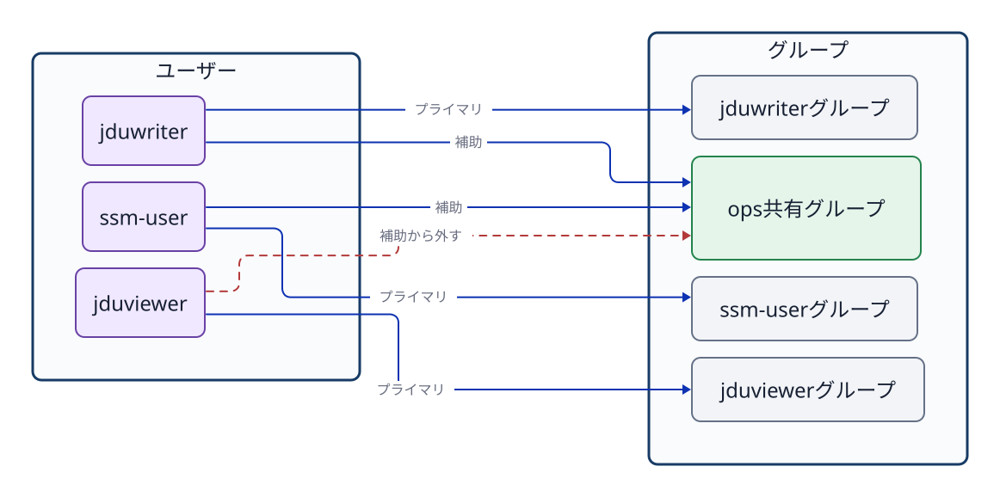
図6-1 ユーザーごとの主グループと、共有用途で利用する補助グループの関係。
補助グループへの追加と、補助グループからの削除には、次のコマンドを使う。
sudo usermod -aG ops jduops
sudo gpasswd -d jduviewer opsusermod -aG において、-a（append）は既存の所属グループを維持したまま追加することを意味する。もし -a を付けずに -G だけでグループ名を指定してしまうと、そこに記載しなかった既存の補助グループからすべて除外されてしまう危険がある。設定を変更した後は、必ず id USER で登録情報を再確認する。
getent group ops の出力末尾にあるメンバー一覧は、そのグループを補助グループとして所属しているメンバーを確認するのに役立つ。しかし、そのグループを主グループとして登録されているユーザーは、この一覧に名前が表示されない場合がある。グループの全所属者を確実に確認する際は、id USER などと組み合わせて多角的に照合する。
グループの所属登録を変更しても、すでに起動して動作しているシェルのプロセスの資格情報（保持しているグループ一覧）が自動的に更新されるわけではない。新しくログインし直すか、新しいセッションを開始して初めて、最新のグループ情報が反映される。
id jduops
sudo su - jduops
id1行目の id jduops はシステムに登録されているアカウント情報を調べる。一方、su - で切り替えた後の id は、新たに起動したログインシェルが実際に保持している実行資格情報を表す。カーネルによるアクセス権の判定は、設定ファイルの静的な登録情報ではなく、操作を実行しているプロセス自身が保持するUID/GIDに基づいて行われる。
suとsudoは目的が違うsu（substitute user）は、別のユーザー権限で動作するシェルセッションを開始する。su - USER のハイフン - は、実際にそのユーザーがログインした際と同様の環境へ切り替える指定であり、ホームディレクトリや環境変数を対象ユーザーの標準状態に初期化する。
sudoは、設定で許可されたユーザーが、管理者（root）や別のユーザーの権限でコマンドを実行する仕組みである。一般ユーザーなら誰でもsudoを使えるわけではない。管理者権限を与える対象と操作の範囲は、必要最小限にする。
sudo su - jduops
id
pwd
exit
id -un別のユーザーのシェルを開始すると、元のシェルの内側に新しいシェルが開く。exitは現在のシェルを終了して一つ前のシェルへ戻る。切り替え後はid -unでユーザー名、pwdで作業ディレクトリを確認できる。
1つのコマンドだけを別ユーザーの権限で試す場合は、対話シェルを開かずに実行する。
sudo -u jduweb -- test -r /srv/jdu-web/index.txt
echo $?これは jduweb の実行資格情報で対象ファイルが読み取り可能かどうかを直接テストしている。管理者である root で読み取れたことをもって、一般のサービスユーザーでも読み取れる証拠と誤認してはならない。
サービス用ユーザーは、サービスのプロセスに与える権限を、人の作業用アカウントや他のサービスから分離するために使う。たとえばWebサーバーのプロセスをjduwebとして動かせば、アクセス権の判定にはjduwebのUIDとGIDが使われる。サービスが必要とするファイルだけを読めるように設定できる。
getent passwd jduweb
id jduweb/usr/sbin/nologinは、通常の対話ログインに使うシェルの代わりに起動し、ログインを断って終了するプログラムである。この設定でも、アカウント自体は存在する。systemdはサービスの設定で指定したユーザーの権限でプロセスを起動できる。人がそのアカウントで対話ログインできないことと、サービスのプロセスがそのUIDでファイルを扱えることは別である。
アカウント（account）は、システムに登録されたユーザーの情報である。ユーザー名とUID、主グループ、ホームディレクトリ、ログインシェルなどを結び付ける。「ssm-userというアカウントがある」とは、サーバーがその名前を識別できるという意味であり、接続してきた人が本当にその利用者かどうかまでは証明しない。
認証（authentication）は、接続してきた相手が、申告したアカウントを使用する正当な相手か確かめることである。パスワード認証なら秘密のパスワードを、SSHの公開鍵認証なら対応する秘密鍵を所持していることを確かめる。公開鍵認証では、接続先の対象ユーザーの~/.ssh/authorized_keysなどに公開鍵を登録する。秘密鍵そのものをサーバーへ送って照合するわけではない。
認可（authorization）は、その主体が特定の操作をしてよいか判断することである。SSHでは、アカウントやサーバーの設定によって接続を許すかも判断する。接続後は、ファイルを読めるか、書けるか、コマンドを管理者権限で実行できるかを、それぞれの規則で判断する。ログインに成功しても、すべての操作が許されるわけではない。
SSHでssm-userとして接続する例を、三つの概念に分けてみる。
ssm-userの登録があり、UIDやホームディレクトリなどを取得できる。登録がなければ、そのユーザーとして通常のセッションを開始できない。ssm-userに登録された公開鍵と対応することを確認する。鍵が合わなければ、アカウントが存在しても認証は失敗する。ssm-userのUIDと所属グループに応じて操作が制限される。たとえば別ユーザーだけが読めるファイルは読めない。sudoを使えるかも別の設定で判断される。これは概念を理解するための整理であり、SSHプログラム内部の厳密な処理順を示すものではない。SSH鍵が正しくても、SSH側のアクセス制限やアカウントの設定によって対話シェルを使えない場合がある。また、サービス用ユーザーはSSHで認証してログインしなくても、systemdから指定されたUIDでプロセスを起動できる。アカウントを持つこと、ログインを認められること、プロセスが何かを操作できることは、それぞれ別の判断である。
答え: 主グループはユーザーに必ず一つ設定される基本のグループである。補助グループは追加で所属できるグループである。複数のユーザーが共有ディレクトリを利用するときは、共通の補助グループを作って対象ユーザーを追加できる。
答え: 動作中のシェルは、開始時に得たUIDとグループの資格情報を保持しているためである。新しくログインするか、新しいセッションを開始して、最新のグループ情報を持つシェルを起動する。
sudo -u jduweb -- test -r FILEを、rootによるcat FILEで代用できないのはなぜか。答え: rootが読めても、jduwebのプロセスに読み取り権限があるとは限らないためである。sudo -u jduwebはjduwebの権限で読み取り可否を判定する。
authorized_keys）man id、man getent、man usermod、man gpasswd、man su、man sudo（制作時に確認）基本的なLinuxのアクセス権（パーミッション）は、所有ユーザー（u: owner user）、所有グループ（g: owner group）、その他（o: others）という3つのクラス（区分）に対して、読み取り（r: read）、書き込み（w: write）、実行（x: execute）の各権限を設定する。
-rw-rw-r-- 1 root ops ... README.txt
drwxrwsr-x ... root ops ... /srv/jdu-share先頭の1文字はファイル種別を示し、- は通常のファイル、d はディレクトリを表す。それに続く9文字を、所有者、グループ、その他の3文字ずつに分割して読み取る。
カーネルは、操作を試みるプロセスの実行資格情報（UID/GID）と、対象ファイルのメタデータを照合してアクセスの可否を判断する。ここで重要なのは、所有者・グループ・その他の権限をすべて足し合わせて判定するのではない、という点である。プロセスがファイルの所有者であれば「所有者（owner）欄」だけが評価され、所有者ではないがグループに該当すれば「グループ（group）欄」だけが評価され、どちらにも該当しなければ「その他（others）欄」が適用される。
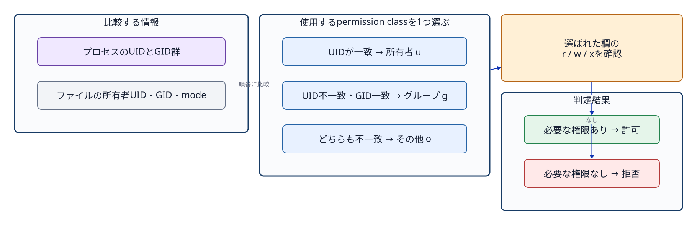
図7-1 プロセスの資格情報から u/g/o のどのクラスを適用するかを選択し、その欄の rwx で操作の可否を判断する流れ。
| 権限 | 通常ファイル | ディレクトリ |
|---|---|---|
| r | 内容を読み取る | 内部の名前（ファイル名・ディレクトリ名）一覧を読み取る |
| w | 内容を変更・追記する | 内部に名前を新規作成・削除する |
| x | プログラムとして実行する | 内部の名前をたどる、対象のパスへ到達する（トラバース） |
ディレクトリに対して書き込み権限（w）があれば、ファイル自体に書き込み権限がなくても、そのディレクトリからファイルを削除できる場合がある（ファイル削除はディレクトリの内容変更であるため）。逆に、ファイル自体に読み取り権限（r）があっても、親ディレクトリに実行権限（x）が付与されていなければ、そのファイルへ到達できず読み取ることができない。このような多段階の権限関係を把握するには、namei -l PATH コマンドで経路上の全ディレクトリのアクセス権を分解して確認する。
アクセス権の数値表記（8進数モード）は、r=4、w=2、x=1 を加算して表現する。
6 = 4+2 = rw-7 = 4+2+1 = rwx5 = 4+1 = r-xしたがって、通常ファイルの 664 は rw-rw-r--、ディレクトリの 775 は rwxrwxr-x となる。
sudo chmod 664 /srv/jdu-share/README.txt
sudo chmod 2775 /srv/jdu-share全権限を意味する 777 は、「その他（others）」に対しても読み取り・書き込み・実行を許可する。共有グループのメンバーだけに操作を許す設計には適さない。
chownとchmodchown は所有者ユーザーおよび所有グループを変更し、chmod はアクセス権モードを変更する。
sudo chown root:ops /srv/jdu-share
sudo chown root:ops /srv/jdu-share/README.txt
sudo chmod 2775 /srv/jdu-share
sudo chmod 664 /srv/jdu-share/README.txtディレクトリの所有者やアクセス権を変更しても、その配下にすでに存在する既存ファイルやサブディレクトリの属性が自動的に一括変更されるわけではない。-R オプションによって再帰的に配下全体を変更することも可能であるが、想定外のファイルまで意図せず書き換えてしまう危険を伴う。
stat -c '%U:%G %a %n' /srv/jdu-share /srv/jdu-share/README.txt通常、新規に作成されたファイルの所有グループは、作成したプロセスの主グループ（primary group）がそのまま適用される。そのため、複数のユーザーが単一の共有ディレクトリ内で作業を行うと、作成者ごとにファイルのグループがばらばらになり、他のメンバーが編集できなくなる問題が生じ得る。
ディレクトリに setgid ビット（Set Group ID）を設定しておくと、そのディレクトリ配下で新規作成されるファイルやサブディレクトリが、作成者の主グループではなく、親ディレクトリの所有グループを自動的に引き継ぐようになる。たとえば共有先 /srv/jdu-share が root:ops 2775 なら、新規ファイルの所有グループは通常 ops になる。
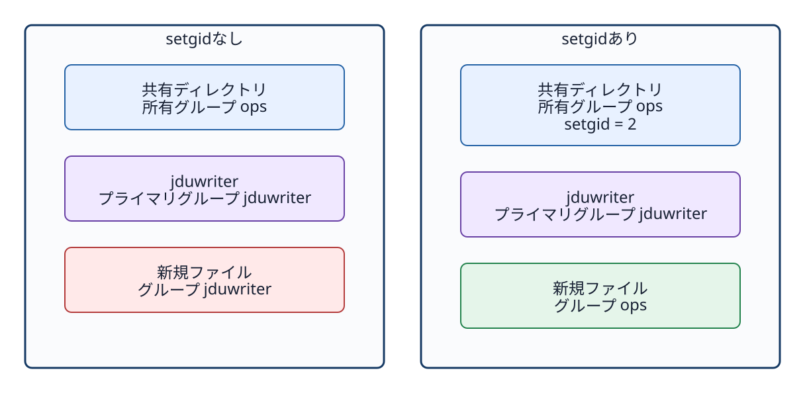
図7-2 setgid は新規項目の所有グループを親ディレクトリとそろえる。所有者、ファイル内容、アクセス権モード全体をコピーする機能ではない。
8進数モード表記の先頭にある数値 2 が setgid ビットを表す。記号（シンボリック）表記では、グループの実行権限の位置が x ではなく s と表示される。
drwxrwsr-x root ops /srv/jdu-shareグループに実行権限（x）が付与されていない状態で setgid だけが設定されていると、大文字の S と表示される。共有ディレクトリでは通常グループに rwx（実行権限を含む）を与えるため、小文字の s として表示される。
setgid は所有グループの継承を制御する機能であり、新規作成されるファイルのアクセス権モード全体を 664 に固定するわけではない。新規ファイル作成時の実際のアクセス権は、アプリケーションプログラムが要求する基本モード値から、umask（ユーザーマスク）によって制限・マスクされたビットを差し引くことで決定される。
umask
touch /srv/jdu-share/sample.txt
stat -c '%U:%G %a %n' /srv/jdu-share/sample.txtたとえば、通常ファイルが基本値 666 を基準に作成される際、umask が 002 であれば、結果として 664（rw-rw-r--）が設定される。ただし、プログラムが最初から別のモード値を要求することもある。なお、umask は新規作成時にのみ作用し、すでに存在するファイルのアクセス権を後から自動変更することはない。
メタデータの表示を目視するだけでなく、実際に対象ユーザーの権限で操作を試行して確認する。
sudo -u jduviewer -- test -r /srv/jdu-share/README.txt
echo $?
sudo -u jduviewer -- test -w /srv/jdu-share
echo $?終了ステータス 0 はテスト条件が成立（成功）したことを示し、1 は不成立（失敗）を意味する。ディレクトリ内にファイルを新規作成できるかどうかは、そのディレクトリ自身の書き込み権限（w）と実行権限（x）に依存する。既存ファイルの書き込み可否だけを確認して、ディレクトリへの作成権限の代用としてはならない。
アクセス拒否が起きたときは、操作したプロセスのユーザーとグループ、適用された権限クラス、不足した権限を順に確認する。単に777を設定して拒否を解消すると、他のユーザーにも不要な操作を許してしまう。必要なユーザーに必要な権限だけを与える。
2775の各桁は何を表すか。答え: 先頭の2はディレクトリのsetgidである。続く7は所有者のrwx、次の7は所有グループのrwx、最後の5はその他のr-xを表す。ディレクトリなら記号表記はrwxrwsr-xになる。
答え: 新規ファイルの所有グループは、通常、親ディレクトリの所有グループを引き継ぐ。所有ユーザーやアクセス権モード全体はコピーされない。新規ファイルのモードには、作成プログラムが要求する値とumaskなどが影響する。
答え: rootは通常のファイルアクセス権による制限を越えて読み取れる場合がある。一方、サービス用ユーザーのプロセスには、そのUIDと所属グループに応じた権限判定が適用されるためである。
man chmod、man chown、man umask（制作時に確認）プログラムとは、ストレージ（保存領域）に保存された命令群や関連データファイルである。一方、プロセスとは、そのプログラムがメモリ上に読み込まれ、OSによって実行されている状態の存在を指す。同一のプログラムから複数のプロセスを起動することが可能であり、それぞれのプロセスには一意の識別番号であるPID（プロセスID）が割り当てられる。
なお、パッケージはプログラムや設定ファイルを配布・導入するための単位であり、サービスはバックグラウンドで継続的な機能を提供・管理するための単位である。次の関係性を混同してはならない。
パッケージをインストールする → プログラムファイルが配置される
プログラムを実行する → プロセスが生成される
systemdがユニットを管理 → サービスプロセスを起動・監視できる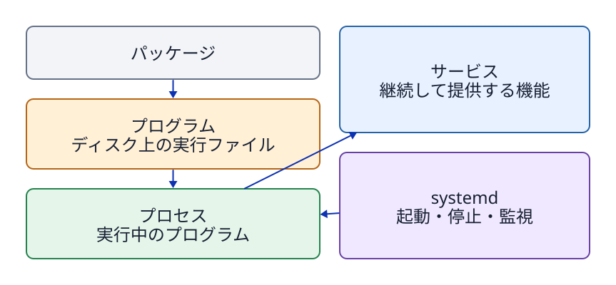
図8-1 保存されたもの（プログラム）、実行中のもの（プロセス）、管理単位（サービス）、配布単位（パッケージ）を明確に区別する。
カーネルは、起動された各プロセスに対して正の整数値であるPID（プロセスID）を一意に割り当てる。プロセスは別のプロセスを子プロセスとして生成（起動）することができ、PPID（親プロセスID）を参照することでプロセスの親子関係を観測できる。
ps -e -o pid,ppid,user,stat,comm,args
ps -p 1234 -o pid,ppid,user,stat,comm,argsps コマンドの表示例にある PID 1234 などを教科書からそのまま入力してはならない。PID はシステムの起動やプロセスの再起動ごとに動的に変化し、プロセスが終了した後は別の新しいプロセスに再利用されることもある。対象サービスの Main PID をコマンドで正確に取得し、その PID が指すユーザー名（user）、コマンド名（comm）、引数（args）が目的のプロセスと一致していることを照合してから操作を行う。
PID 1 はシステムの起動初期から動作し続ける最上位の特別な管理プロセスであり、本演習環境では systemd が担当している。演習課題において PID 1 に対してシグナルを送信してはならない。
ターミナルから通常のコマンドを実行すると、シェルはそのコマンドがフォアグラウンド（前景）プロセスとして終了するまで待機する。その間、キーボードからの入力は主にそのプロセスへ直接渡される。Ctrl+C は、ターミナルからフォアグラウンドのプロセスグループ全体へ割り込みシグナルを送信する操作である。
コマンドの末尾に & を付加することでバックグラウンド（背景）実行させることも可能であるが、本演習における常駐サービスはすべて systemd によって統括管理する。シェルのバックグラウンドジョブとOSのシステムサービスを同一視してはならない。SSHセッションを切断した後も恒久的に稼働させ続けるべきサービスを、単なる command & で安易に代用してはならない。
シグナル（signal）は、OSやプロセスから別のプロセスに対して、特定の出来事や制御要求を非同期に通知する仕組みである。
Ctrl+C などから送信される割り込みシグナルである。kill -TERM PIDkill コマンドは、その物騒な名称とは裏腹に、常にプロセスを強制終了するだけのコマンドではない。本質は「対象プロセスへ指定したシグナルを送信する」ツールである。たとえば sudo pkill 1956 -TERM のように、PIDの数値を pkill のプロセス名パターン位置に渡すのは誤った使い方である。PID を直接指定する場合は kill を用い、プロセス名のパターンで指定する場合は pkill を用いる。ただし本課題では、意図しない巻き込み終了を防ぐため、対象の PID を特定して kill を使う手順に統一している。
演習P3および課題M3では、稼働している3つのサービスプロセスのうち、2番目のサービスプロセスだけを安全に終了させる。
ps -p で対象のコマンド名と実行ユーザーを照合する。kill -TERM で終了シグナルを送信する。P3_PID="$(systemctl show --property MainPID --value jdu-p3-process2.service)"
printf 'MainPID=%s\n' "$P3_PID"
ps -p "$P3_PID" -o pid,user,comm,args
sudo kill -TERM "$P3_PID"実際のPIDを変数へ代入して参照することで手作業による転記ミスを減らせるが、その変数に格納された値が意図したものであるかを実行前に目視確認する責任は依然として操作者にある。
プロセスを終了させても、ストレージ上に保存されているプログラムファイル、ユニットファイル、データファイルなどはそのまま残る。逆に、ディスク上の実行ファイルを削除したとしても、すでにメモリ上に読み込まれてマッピングされている実行中プロセスが直ちに停止するわけではない。課題M3は「プロセスの実行状態を制御する課題」であり、ファイルを削除する課題ではない。
また、サービスマネージャー（systemd）の設定によっては、プロセスが終了したことを検知して自動的に再起動を試みる場合がある。演習P3および課題M3の練習用ユニットでは、意図的に Restart=no と設定されているため、TERM シグナル送信後に停止状態のまま静止して観測できる。一般的な実務環境のサービスがすべて同じ挙動をするとは限らない点に注意する。
/proc/PIDで実行状態を見るsudo cat "/proc/$P3_PID/cmdline" | tr '\0' ' '
printf '\n'
sudo readlink -f "/proc/$P3_PID/cwd"cmdline は NUL 文字（\0）で引数群が区切られているため、ターミナルで人間が読みやすいよう tr コマンドで空白文字に置き換えて表示している。cwd はプロセスのカレント作業ディレクトリ（working directory）を指すシンボリックリンクである。プロセスが終了すると、その PID に対応する /proc 配下のエントリも自動的に消滅する。
これはカーネルの深層解析を行うためのものではなく、ユニットファイルの設定値と、現在稼働しているプロセスの実態が正しく一致しているかを客観的に観測するために活用する。
ps コマンドで照合すべき理由を説明せよ。man ps、man kill、man proc（制作時に実機確認）Restart=noというLab固有条件を区別する。実用的なソフトウェアは、単一の実行ファイルだけで完結するとは限らない。動作に必要な共有ライブラリ、設定ファイルのテンプレート、マニュアル文書、データファイルなどを同時に必要とする。パッケージ（package）とは、これら関連するファイル群、バージョン情報、依存関係、およびシステムの導入・削除スクリプトをひとまとめにした配布単位である。
Ubuntuでは主に Debian パッケージ形式（.deb）を採用し、それを APT（Advanced Package Tool） で一括管理する。APT はリポジトリ（repository）から利用可能な最新のパッケージ情報を取得し、必要な依存ライブラリを自動で解決しながらシステムへ導入する。インターネット上から拾ってきた素性の知れないスクリプトを不用意に root 権限で直接実行することと、公式に信頼されたリポジトリから検証済みのパッケージを導入することは、セキュリティの観点から根本的に異なる行為である。
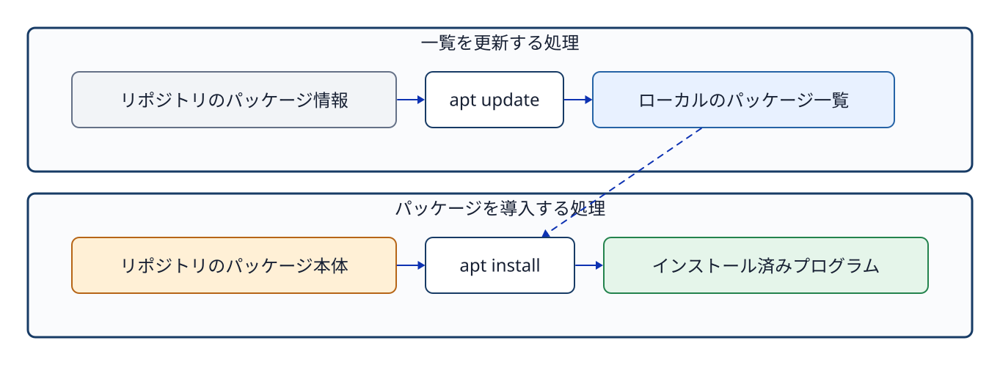
図9-1 apt update はインデックス（一覧情報）を更新し、apt install がパッケージ本体を取得・導入する流れ。
リポジトリ（repository）とは、パッケージ本体とそれに付随するメタデータ（バージョンや依存関係の説明）を提供する配布拠点のサーバーである。手元のUbuntuシステムは、どのリポジトリにどのバージョンのパッケージが存在するかをローカルのパッケージインデックス（一覧情報）として保持している。
sudo apt update
apt show cmatrixapt update は、リポジトリから利用可能なパッケージの一覧（インデックス）を最新状態に更新するコマンドである。これ自身は導入済みパッケージの本体を更新するコマンドではない。一方、導入済みパッケージ本体を新バージョンへ更新するコマンドは apt upgrade である。本演習環境では、意図しないシステム変更や演習条件の破壊を防ぐため、授業中に無関係なシステム全体のアップグレード（apt upgrade）を行ってはならない。
apt show cmatrixパッケージ名、バージョン、依存関係、ダウンロードサイズ、導入後の専有サイズ、機能説明を確認する。似た名前の別パッケージを誤って導入してはならない。なお、apt コマンドは自動化スクリプト向けに出力形式の互換性を保証しないという警告を出す場合があるため、厳密な自動スクリプトでは apt-get や apt-cache などを使い分けるのが通例である。本演習では人間が対話的に結果を確認・学習するため、使いやすい apt コマンドを使用する。
sudo apt install cmatrix
command -v cmatrix
cmatrixsudo 権限が必要となるのは、システム全体のパッケージデータベースや、管理者保護下にある /usr/bin などの配置領域を変更するためである。導入が完了したら、command -v を用いてシェルがどのパスの実行ファイルを認識しているかを確認する。cmatrix は Ctrl+C で終了できる。
パッケージがシステムに導入済みであることと、現在そのプロセスがメモリ上で動作していることは全く別の状態である。コマンドを終了させてもパッケージ自体はシステムに残り続ける。その一方で、サーバー系ソフトウェアのパッケージによっては、導入完了時にサービスプロセスを自動起動する設定になっているものもある。思い込みで判断せず、systemctl コマンドを用いて実際の稼働状態を確認することが重要である。
dpkg-query -W -f='${Package} ${Version}\n' cmatrix
dpkg -S /usr/bin/cmatrixdpkg-query は、ローカルのパッケージデータベースから現在導入されている正確なバージョン情報を読み出す。dpkg -S PATH は、指定したファイルパスがどのパッケージによって提供・配置されたかを調べる。command -v が「シェルが実行対象として認識しているファイルパス」を答えるのに対し、dpkg -S は「そのファイルを管理しているパッケージの所属関係」を答えるものであり、両者は解決しようとしている問いが根本的に異なる。
apt remove（本体削除）、apt purge（設定ファイルを含めた完全削除）、apt autoremove（不要になった依存パッケージの自動削除）には、それぞれ異なる影響範囲がある。本演習は指定されたパッケージを正しく導入し、その状態変化を観測することを目的としており、不要パッケージのクリーンアップは演習課題の範囲外としている。共通の演習環境や教員が用意したイメージにおいて、指示のないシステムパッケージを不用意に削除してはならない。
apt update と apt install の役割の違いを、インデックス情報とパッケージ本体に着目して説明せよ。command -v cmatrix と dpkg -S /usr/bin/cmatrix がそれぞれ何を調べるコマンドであるか、その違いを説明せよ。man apt、man dpkg-query、man dpkg（制作時に確認）サービス（service）とは、利用者が毎回ターミナルから手動で起動しなくても、OSシステムがバックグラウンドで自動管理し、継続的な機能を提供するプログラムである。Webサーバー、SSHサーバー、時刻同期、ログ管理デーモンなどがその代表例である。ただし、システム上で動作するすべてのプロセスがサービスであるわけではなく、またすべてのサービスがネットワーク待受用のポートを持つわけでもない。
Ubuntu 24.04では、最上位プロセスである systemd が PID 1 として起動し、システム内の多様なサービス群を一元管理する。ここで重要なのは、systemd は「個々のサービス処理そのもの」を行うのではなく、各種サービスの起動、停止、依存関係の解決、死活監視、システム起動時の自動起動などを統括管理する「サービスマネージャー」プログラムである、という点である。
systemd はユニット（unit）という統一的な管理単位を用いて各種リソースを制御する。その中でもサービスを定義する .service ユニットファイルには、「どの実行ファイルを、どのユーザーの権限で、どのディレクトリを作業場所として起動するか」といった実行ルールが明確に記述されている。
[Service]
User=jduapp
WorkingDirectory=/srv/jdu-status
ExecStart=/usr/bin/python3 /srv/jdu-status/server.pyUser: サービスプロセスを実行するユーザー（資格情報）。WorkingDirectory: プロセス起動時のカレントディレクトリ（作業ディレクトリ）。ExecStart: 実際に起動するプログラムの絶対パスと引数。systemctl cat jdu-status.servicesystemctl cat コマンドは、systemd がメモリ上に読み込んでいるユニットファイルの定義内容と、設定を部分上書きするドロップイン設定（drop-in）の全文を表示する。演習P4および課題M4では、教員側があらかじめ完成済みのユニットを用意している。学生自身がユニットファイルを直接編集するのではなく、ユニットの設定内容と、実際に動作しているプロセスの状態がどのように対応しているかを正確に読み取ることが目的である。
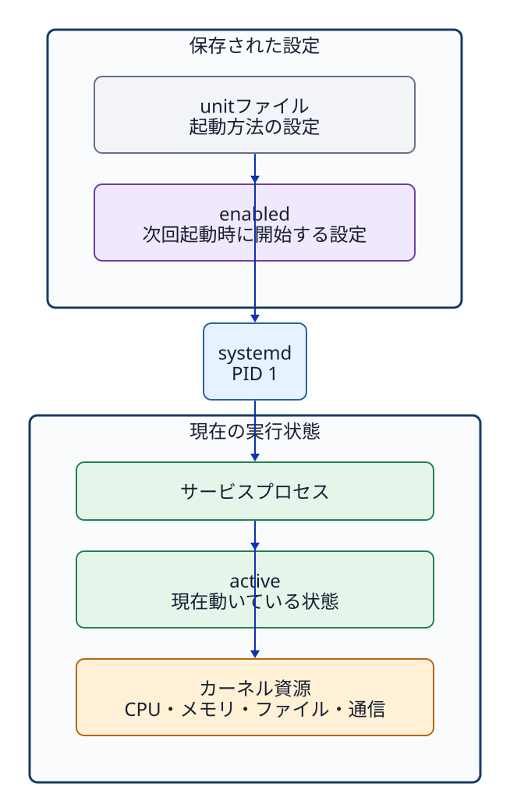
図10-1 ユニット（unit）は設定、systemd は管理者、サービスプロセスが実際の処理を行う構造。
systemctl is-active jdu-status.service
systemctl is-enabled jdu-status.serviceしたがって、「現在は active（稼働中）だが disabled（再起動時には自動起動しない）」という状態や、「現在は inactive（停止中）だが enabled（次回起動時には自動起動する）」という状態が当然に成立し得る。サービスの即時起動（start）と自動起動の有効化（enable）は、全く別軸の独立した操作である。
sudo systemctl start jdu-status.service
sudo systemctl enable jdu-status.service実務では enable --now オプションによって起動と自動起動設定を同時に行うこともあるが、演習P4では両者の概念的な違いを明確に観測するため、別々に実行して確認する。
なお、ユニットファイル自体の記述を変更した際に systemd 本体へ再読み込みを指示する systemctl daemon-reload と、サービスプロセス自身に設定を再読込させる reload は全く別の操作である。本演習環境ではユニットファイルの変更を行わないため、P4/M4で daemon-reload を実行する必要はない。
systemctl status jdu-status.service
systemctl show --property MainPID --value jdu-status.servicesystemctl status は、ユニットのロード状態、稼働状態（active）、Main PID、直近の関連ログなどを一覧表示する。出力行数が多い場合は自動的にページャー（less 互換画面）が起動するため、q キーを押して終了し元のシェルプロンプトへ戻る。一方、systemctl show は機械的な読み取りに適したプロパティ（キーと値の形式）を抽出できる。
Main PID を取得したら、稼働中の実プロセスとユニット設定が合致しているかを照合する。
M4_PID="$(systemctl show --property MainPID --value jdu-status.service)"
ps -p "$M4_PID" -o pid,user,comm,args
sudo readlink -f "/proc/$M4_PID/cwd"確認する対応は次のとおりである。
| ユニットの設定 | 実プロセスで確認する場所 |
|---|---|
User= | ps の USER 欄 |
ExecStart= | ps の args 欄、および /proc/PID/cmdline |
WorkingDirectory= | /proc/PID/cwd が指すシンボリックリンク先 |
systemd がプロセスを active（稼働中）として管理していたとしても、コンテンツファイルに対するアクセス権が不足して読めない、意図しないIPアドレスで待受（listen）している、あるいはアプリケーション内部で例外エラーが発生しているなどの理由で、利用者に正常な応答を返せない場合がある。次章では、サービス管理の状態にとどまらず、プロセス、ソケット、HTTPレスポンス、ログ出力へと確認範囲を広げていく。
systemctl statusにすべてのプロセスが並ぶわけではない引数を指定せずに systemctl status を実行すると、システム全体の稼働サマリーやプロセスツリーが表示され、個々のユニットの詳細が必ずしも見やすく一覧化されるわけではない。目的のサービスを確認する際は、必ずユニット名を明示的に指定して実行する。
systemctl status jdu-m3-process1.service
systemctl list-units --type=service 'jdu-m3-*'ユーザーがターミナルで起動したシェルプロセスなど、systemd のサービスユニット配下に属さないプロセスも多数存在する。システム全体のプロセス一覧を網羅的に確認するには ps コマンドを使用し、systemd の管理対象であるサービスの状態を確認するには systemctl コマンドを使用する、という使い分けを明確にする。
WorkingDirectory の設定が、実際の稼働プロセスへ正しく反映されているかを /proc 配下の情報を用いて確認する方法を説明せよ。man systemctl、man systemd.service（Web版は2026-09-18に取得できなかったため制作時に実機確認）systemd はユニットの設定定義に従ってサービスプロセスを起動する。そのプログラムがネットワーク通信を必要とする場合、システムコールを通じてカーネルへソケット（socket）の作成を依頼する。カーネルはIPアドレス、通信プロトコル、ポート番号などに基づいて、外部からの通信データを該当するプロセスへ正しく届ける。
サービスが勝手にソケットを生み出すというよりは、「サービスとして動作するプログラムが、カーネルの提供するソケット機能を利用して通信を行っている」と理解するのが正確である。systemd の役割はそのプロセスを管理・監視することであり、ネットワーク通信の送受信処理そのものをすべて systemd が代行しているわけではない。
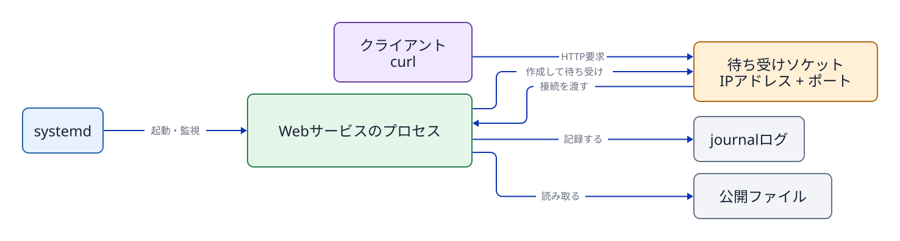
図11-1 管理（systemd）、実行（プロセス）、通信機能（カーネル・ソケット）、クライアント要求（リクエスト）の各経路の分離構造。 1つのサービスが複数のソケットを持つ場合や、ネットワーク通信を行わないサービスも存在する。
本演習環境ではトランスポート層の通信プロトコルとして TCP（Transmission Control Protocol） を使用する。TCP はパケットの到達確認を行い、データを欠落なく順序どおりに届ける信頼性の高い通信方式である。3ウェイ・ハンドシェイク（handshake）、パケット再送、輻輳（ふくそう）制御などの詳細な仕組みは後続のネットワーク単元で扱う。
IPアドレスはネットワーク上のインターフェース（通信相手のホスト）を識別する。一方、ポート（port）番号は、同一ホスト内で動作しているどの通信窓口（どのプロセス）へデータを届けるかを識別するための番号である。「ポート番号そのものがプログラム」なのではない。カーネルがソケットの待受情報とポート番号を照合し、該当するプロセスへ通信データを引き渡す。
127.0.0.1: IPv4のループバックアドレス（loopback）。外部ネットワークからは直接到達できず、基本的に同一ホスト内からの通信のみを受け付ける。0.0.0.0: そのホストが持つすべてのIPv4ローカルアドレス（すべてのネットワークインターフェース）で待ち受けることを意味する特殊表記。[::]: すべてのIPv6ローカルアドレスで待ち受ける指定。OSの設定によってはIPv4通信も同時に受け付ける場合がある。演習P5および課題M5では、セキュリティ上の到達範囲を明確に限定するため、127.0.0.1（ループバックアドレス）だけで待ち受ける構成をとる。ループバックで待受しているからといって「外部インターネットへ公開されている」わけではない。
ssで読むss（Socket Statistics）は、カーネルが管理しているソケットの詳細な状態を表示するコマンドである。
sudo ss -lntp | grep ':8081'-l: 待受（LISTEN）状態のソケットのみを表示する。-n: サービス名（httpなど）へ逆引き変換せず、ポート番号の数値をそのまま表示する。-t: TCPソケットのみを表示する。-p: そのソケットを利用しているプロセスの情報（名前やPID）を表示する。表示には管理者権限が必要な場合がある。概念上の例:
State Recv-Q Send-Q Local Address:Port Peer Address:Port Process
LISTEN 0 5 127.0.0.1:8081 0.0.0.0:* users:(("python3",pid=2451,fd=3))出力を読む順序は、状態（State: LISTEN）、待受アドレスとポート（Local Address:Port: 127.0.0.1:8081）、そして利用プロセス情報（Process: pid=...）である。待受アドレスが 127.0.0.1:8081 であり、プロセス情報内の PID が systemd で確認したサービスの Main PID と一致しているかを照合する。なお、2451 は教科書の表示例であり、必ず自身の環境で出力された実機の PID を読み取ること。
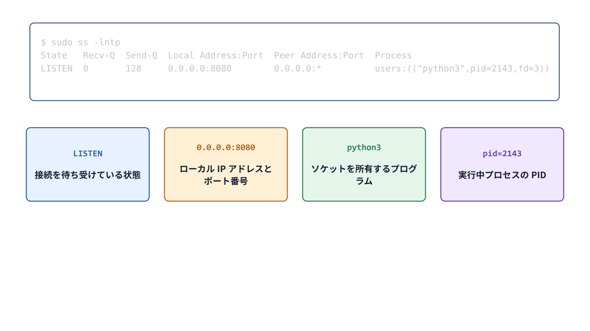
図11-2 ss -lntp の出力行を、状態・アドレス・ポート・プロセス情報へ分解して照合する読み方。
サーバー（server）プロセスは、ソケットを作成してクライアントからの接続要求（リクエスト）を待ち受ける。クライアント（client）は、サーバーのソケットへ接続を確立し、リクエストを送信する。本演習環境では、同一のUbuntuホスト内で実行する curl コマンドがクライアントとなり、jdu-web.service のプロセスがサーバーとなる。
curl -i http://127.0.0.1:8081/URL http://127.0.0.1:8081/ において、http は通信プロトコル（スキーマ）、127.0.0.1 は接続先ホスト、8081 はポート番号、/ はリクエスト対象のパスである。-i オプションは、応答本文（ボディ）だけでなく HTTP レスポンスヘッダーもあわせて表示する。
HTTP/1.0 200 OK
Content-Type: text/plain
（本文）200（200 OK）は、HTTP アプリケーション層におけるステータスコードである。「TCP レベルのネットワーク接続が成功したこと」「HTTP レベルの応答ヘッダーが返ってきたこと」「応答本文（ボディ）の内容が期待どおりであること」の3点は、それぞれ異なるレイヤーの成否として個別に検証する必要がある。
curl --max-time 2 http://127.0.0.1:18081/
sudo ss -lnt | grep ':18081'対象のポートで接続を待ち受けるプロセス（リスナー）が存在しなければ、OSは接続拒否（Connection refused）を返すか、タイムアウトとなる。画面に出たエラーメッセージの文面だけで原因を決めつけてはならない。ss コマンドでリスナーが実際に存在するかを確認し、IPアドレスやポート番号の入力間違い、ファイアウォールによる遮断、ルーティング経路の不備などをレイヤーごとに論理的に切り分ける。本演習で登場するクローズドポート（閉じたポート）は、「リスナーが存在しない」という意図的な実験条件である。
Webサーバープロセスが要求されたコンテンツファイルを読み出してクライアントへ返すためには、そのサービスの実行ユーザーが、コンテンツファイル自身およびその親ディレクトリ群への正当なアクセス権（読み取り権限と実行権限）を保持していなければならない。
id jduweb
stat -c '%U:%G %a %n' /srv/jdu-web/index.txt
namei -l /srv/jdu-web/index.txt
sudo -u jduweb -- test -r /srv/jdu-web/index.txt
echo $?jduweb ユーザーへ対話的に su - ログインできないことは何ら問題ではない。サービス専用ユーザーは不正利用防止のために対話シェルが無効化されているのが標準であり、第6章で学んだ sudo -u を用いることで、対話ログインを開くことなくそのユーザーの資格情報でファイルのアクセス可否を確実にテストできる。
プログラムは動作中にさまざまなログメッセージを出力する。systemd 環境のログ収集デーモンである systemd-journald は、各サービスプロセスが出力した標準出力（stdout）や標準エラー出力（stderr）、およびシステムログメッセージを一元的に収集してバイナリ形式で蓄積する。journalctl コマンドは、その蓄積されたジャーナルログを閲覧・検索するために使用する。
curl -i http://127.0.0.1:8081/m5-check
sudo journalctl -u jdu-web.service --no-pager -n 20-u は対象ユニットを指定してログを絞り込み、-n 20 は直近の末尾20件を表示し、--no-pager はページャーを起動せず標準出力へ直接出力する。ここで REQUEST path=/m5-check というログ行を探し出す。リクエストを複数回送信すればログも複数行記録される。単なる時刻の文字列を暗記・転記するのではなく、指定されたリクエストパスと、現在のサービス起動（インボケーション）に対応したログが正しく記録されているかを確認することが目的である。
systemd にはサービスが起動されるたびに一意のインボケーションID（Invocation ID）を割り当てて各稼働期間を識別する機能がある。自動採点スクリプト（LabCheck）は現在の起動期間に対応するログであるかを厳密に照合しているが、学生自身がその内部IDの数値を暗記する必要はない。「過去の古い起動ログと、現在テストした動作のログを混同せず見分ける」という観測の姿勢を学ぶことが目的である。
演習P5および課題M5の確認手順は、次の多層的な因果関係を確実な証拠で結び付けていく。
ユニット設定（unit file）
↓ systemctl start
サービスプロセス（Main PID・実行ユーザー）
↓ カーネルへソケット作成を依頼
127.0.0.1:port の待受ソケット（listening socket）
↓ curl による接続・リクエスト
HTTP ステータスコード・ヘッダー・本文
↓ プログラムによるログ出力
ジャーナル（journal）の REQUEST ログ記録どれか1箇所の成功だけで、システム全体が正常に動いていると早合点してはならない。systemctl、ss、curl、journalctl は、それぞれ全く異なるレイヤーの事実を客観的に観測している。
127.0.0.1:8081 と 0.0.0.0:8081 の違いを、外部ネットワークからの到達可能性に着目して説明せよ。ss コマンドの出力にあるプロセスの PID と、systemd の Main PID を照合すべき技術的な理由を説明せよ。man ss、man curl、man journalctl（制作時に確認）SSH通信において、接続や転送の起点（開始側）となる環境をローカル（local）、接続先となる遠隔環境をリモート（remote）と呼ぶ。演習P6および課題M6においては、操作の起点となる AWS CloudShell が「ローカル」、演習対象の Ubuntu EC2 インスタンスが「リモート」である。学生の物理PCはブラウザを表示しているクライアントにすぎず、実際にファイル転送コマンドなどを発行・実行する現場は CloudShell である点に留意する。
学生PCのブラウザ
└─ CloudShell（ローカル）
└─ SSH over Session Manager トンネル
└─ Ubuntu EC2（リモート）このように、「ローカル」とは「手元の物理PC」と常に同義であるわけではない。自分がどのターミナル環境でコマンドを実行しているかによって、ローカルとリモートの相対的な立場が決まる。
SSH（Secure Shell）は、主に通信経路の暗号化、接続先ホストの正当性の確認、および操作ユーザーの認証（authentication）を行い、リモート環境のシェルやコマンドを安全に実行するための仕組みである。
秘密鍵は決して外部に公開・提出したり、Gitリポジトリへコミットしてはならない。また、秘密鍵ファイルのアクセス権を他者が読めるように緩めてはならない（SSHクライアントが警告を出して接続を拒絶する）。本演習環境では、初期構築処理によって CloudShell 側に必要な鍵と設定ファイルが自動的に準備されている。
jdu-ubuntu はDNS名とは限らないssh jdu-ubuntujdu-ubuntu は、本演習環境のSSH設定ファイル（~/.ssh/config）内に定義されたホストエイリアス（Host alias: 別名）である。一般的なDNSサーバーで名前解決できる正式なインターネットホスト名とは限らない。そのため、ping jdu-ubuntu を実行したり、SSH設定を参照しない別のネットワークツールで名前解決に失敗したとしても、技術的な矛盾ではない。
このエイリアスの定義には、AWS Systems Manager のセッション機能（Session Manager）を利用して通信をトンネリングする ProxyCommand などの設定が組み込まれている。これは、プライベートサブネット内にある Ubuntu サーバーに対して、インターネットから TCP 22 ポートを危険に直接公開することなく、安全にSSH接続を確立するための構成である。
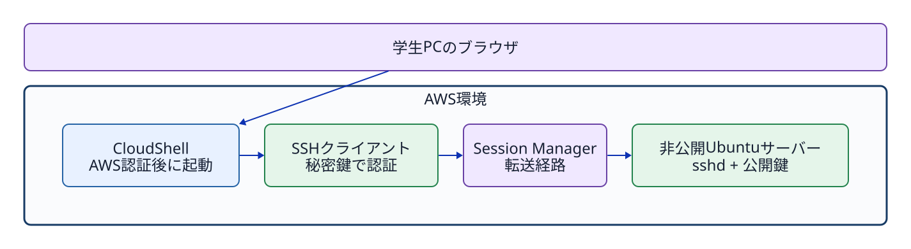
図12-1 AWS認証によってセッショントンネルを確立する層と、SSHがUbuntuユーザーを公開鍵認証する層は独立している。
AWSマネジメントコンソールへのログイン認証、Session Manager を開始するための AWS IAM 権限、そしてSSH公開鍵による Ubuntu OS 上のユーザー認証は、それぞれ全く異なるセキュリティレイヤーに属している。
CloudShell 側での確認:
id -un
hostname
pwdUbuntu へ接続した後の確認:
ssh jdu-ubuntu
id -un
hostname
pwd
exitexit でログアウトした後は、手元の CloudShell 側で同じ3つの確認コマンドを再実行する。プロンプトの見た目だけに頼らず、OSの返す正確な値で現在地を把握する。
対話的なログインシェルを開くことなく、単一のコマンドだけをリモート環境で直接実行させることができる。
ssh jdu-ubuntu 'id -un; hostname; pwd'コマンド全体を外側からシングルクォートで囲むことにより、内部のコマンド文字列が CloudShell で展開されることなく、そのままリモートの Ubuntu 側のシェルへ渡されて解釈・実行される。課題M6では、リモート側の数値を手作業で転記するのではなく、このリモートコマンドの仕組みを活用してサーバー側のファイルへ直接記録する。
ssh jdu-ubuntu 'cd ~/jdu-lab/m6 && printf "REMOTE_USER=%s\nREMOTE_HOST=%s\nREMOTE_PATH=%s\n" "$(id -un)" "$(hostname)" "$HOME" > remote-result.txt'この一行は次の処理を Ubuntu 側で順次実行する。
~/jdu-lab/m6 ディレクトリへ移動する。remote-result.txt へ上書き保存する。scp（Secure Copy）は、SSHの認証・暗号化機構を利用して、ネットワークを介した安全なファイル転送を行うコマンドである。
ローカルからリモートへアップロード:
scp local-source.txt jdu-ubuntu:~/jdu-lab/m6/upload.txtリモートからローカルへダウンロード:
scp jdu-ubuntu:~/jdu-lab/m6/remote-result.txt downloaded-result.txtコロン : の左側が SSH の接続先ホスト（エイリアス）、右側がリモート環境におけるパスである。転送元（source）と転送先（destination）の指定順序を逆にしてしまうと、意図とは正反対の転送や、大切なファイルへの誤った上書き事故を招く。転送を実行する前に、pwd と ls でローカル側のファイルを確認し、リモート側のパスは ssh ... 'ls -l ...' コマンドであらかじめ確認しておくことが肝要である。
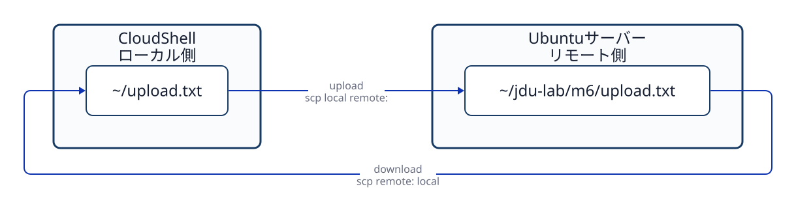
図12-2 コマンドを実行する CloudShell（ローカル）を基準とした、アップロードとダウンロードの転送方向。
sha256sum local-source.txt
ssh jdu-ubuntu 'sha256sum ~/jdu-lab/m6/upload.txt'
ssh jdu-ubuntu 'stat -c "%U:%G %a %n" ~/jdu-lab/m6/upload.txt'計算された SHA-256 ハッシュ値が両環境で完全に一致していれば、実用上ファイルの内容（データ本体）が同一である極めて強力な証拠となる。しかし、ハッシュ値の一致は、ファイルの所有者、グループ、アクセス権モード、配置パスまで同一であることを保証するものではない。Ubuntu 側にアップロードされたファイルが ssm-user 所有であり、かつアクセス権モードが 644 であるという要件は、別途 stat コマンドを用いて客観的に確認しなければならない。
ssh jdu-ubuntu 'chmod 644 ~/jdu-lab/m6/upload.txt'上記のコマンドは、CloudShell 側から SSH 経由でリモートファイルのアクセス権モードを変更している。もしすでに Ubuntu 側に対話ログインしている状態であれば、Ubuntu 上で直接 chmod 644 ~/jdu-lab/m6/upload.txt を実行すればよい。自分が現在どちらの環境で作業しているのかを常に把握し、手順を混同してはならない。
課題M6の自動判定では、Ubuntu 側においてアップロードされたファイルの状態と remote-result の内容を2件検証する。一方、CloudShell 側においてはローカル元ファイル、アップロード内容の一致、リモート結果の取得、ダウンロード内容の一致という4件を検証する。
M6 Ubuntu 2/2
M6 CloudShell 4/4
合計 6/6同一の jdu-check M6 という判定コマンドであっても、実行した環境（Ubuntu か CloudShell か）によって動作するチェックロジックが異なる。片方の環境で PASS しただけでは課題M6の完了とはならない。進捗ダッシュボードは両環境の最新判定結果をそれぞれ個別に管理・合算している。
man ssh、man ssh_config、man scp、man sha256sum（制作時に確認）最終課題である M7 は、新しい未知のコマンドを暗記して実行する課題ではない。第1章から第12章までで個別に学んできたOSの各要素機能を、単一のサービスシステム（service system）として有機的に統合・連動させる総まとめの課題である。
ユーザー/グループ ─ アクセス権 ─ コンテンツファイル
│
ユニットファイル ─ systemd ─ サービスプロセス
│
待受ソケット
│
HTTP レスポンス
│
ジャーナルログ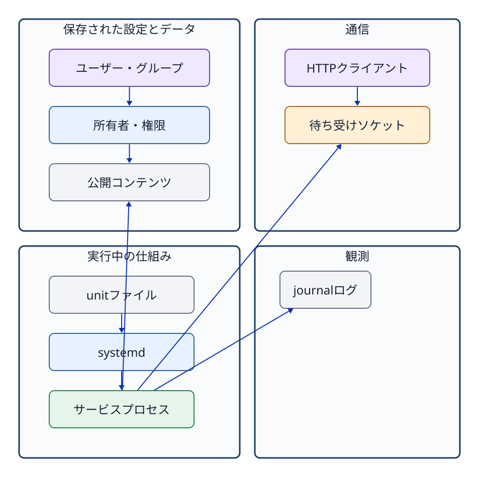
図13-1 設定、保存状態、実行状態、通信、観測の各要素を一本の強固な鎖として照合する関係図。
システムの障害や未完成状態（不具合）を調査・トラブルシューティングする際は、次の3つのレイヤーに明確に切り分けて思考する。
User、WorkingDirectory、ExecStart は正しく定義されているか。curl コマンドで接続した際、どのHTTPステータスコードと応答本文が返ってくるか。設定ファイルの記述が正しく見えても、サービスを start していなければプロセスは稼働しない。また、プロセスが active であっても、ファイルのアクセス権やソケットの待受設定が誤っていれば、HTTPクライアントは期待どおりの応答を受け取れない。さらに、手動テストでHTTPアクセスに成功したとしても、それだけでシステムの次回起動時（ブート時）に自動起動する保証にはならない。
| 検証したい問い | 主な確認コマンド |
|---|---|
| アカウント/グループの登録 | id USER、getent passwd/group |
| ファイルのメタデータ | stat、namei -l |
| 特定ユーザーのアクセス権 | sudo -u USER -- test ... |
| ユニット定義の設定値 | systemctl cat UNIT |
| 現在およびブート時の稼働状態 | systemctl is-active/is-enabled |
| 稼働中プロセス情報 | systemctl show -p MainPID、ps、/proc/PID |
| 待受ソケットの状態 | sudo ss -lntp |
| HTTPの疎通・応答内容 | curl -i URL |
| サービスのジャーナルログ | sudo journalctl -u UNIT |
「画面に大量の出力をとりあえず全部出す」のではなく、自分の立てた仮説を検証するために最適なコマンドを選択し、得られた事実に基づいて次の調査ステップへと進む姿勢が求められる。
ここでは完成したコマンド列をそのまま提示することはしない。学生自身が自力で課題を解決できるよう、作業の論理的な依存関係のみを整理して示す。
200 OK と応答本文が正しく返ることを確認する。ssm-user のシェルへ戻り、採点チェックスクリプト（jdu-check M7）を実行する。途中の段階で意図どおりに動かない場合であっても、最後まで強引に進めてから全体を破棄して最初からやり直す必要はない。たとえばサービス自体が起動しないのであれば systemctl status や journalctl で起動エラーの原因を調べ、サービスは起動するもののHTTP本文が返らないのであればコンテンツファイルの配置パスやサービスユーザーの読み取りアクセス権を調べる、といったように原因箇所を局所化して対処する。
本教科書で学んだ Ubuntu・OS基礎の知識は、後続の授業単元で扱う Nginx（Webサーバー）、BIND 9（DNSサーバー）、PostgreSQL（リレーショナルデータベース）などを構築・運用する際にもそのまま土台となる。これらは用途の異なるソフトウェアであるが、OS上で動作する仕組みとしては全く同一の基本機能を共有している。
| 後続のサービス | 本書で再利用する技術的視点 |
|---|---|
| Nginx | パッケージ管理、ユニット定義、ワーカープロセス、コンテンツや設定ファイルのアクセス権、80/443 ポートのソケット待受、HTTP プロトコル処理、アクセスログ・エラーログ |
| BIND 9 | サービス専用ユーザー、ゾーン定義・設定ファイル、53番ポート（TCP/UDP）のソケット待受、DNS クエリ処理、ジャーナルログ |
| PostgreSQL | サービス専用ユーザー、データディレクトリのアクセス権保護、複数プロセス構成、5432番ポートのソケット待受、ロール認証、データベースログ |
この対照表は個別の設定手順を示したものではない。将来未知の新しいソフトウェアやミドルウェアに出会った際にも、「どのユーザー権限で動くのか」「どの設定やファイルを読み取るのか」「どのIPアドレス・ポートで待ち受けるのか」「稼働状態や障害をどう観測するのか」という、本書で培った普遍的な共通の問いを適用できることを示している。
次のトラブルシューティングの場面において、どのような論理的順序でシステムを観測・確認すべきか説明せよ。
curl コマンドを実行すると Connection refused（接続拒否）になる。解答には単一のコマンド名だけを挙げるのではなく、設定・稼働・観測のどのレイヤーに着目し、どのようなコマンドと証拠を用いて原因を特定・切り分けるかを含めて論述せよ。
個々のコマンドのオプションや構文を機械的に丸暗記することが、本教科書の学習目標（到達点）ではない。OSが提供するファイル、ユーザー識別情報（UID/GID）、アクセス権、プロセス、サービス、ソケット、ログという各機能を明確に概念として区別し、目的に応じて適切な観測手段を選択・実行できるようになることこそが到達点である。実務や演習においてマニュアルや早見表を参照しながらであっても、異なるパス、異なるユーザー、異なるサービスに対して、ここで学んだ普遍的な思考の枠組みを一貫して適用できれば十分である。
{kind=link}